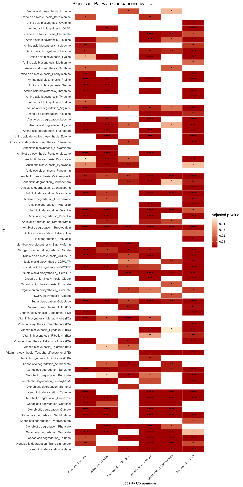
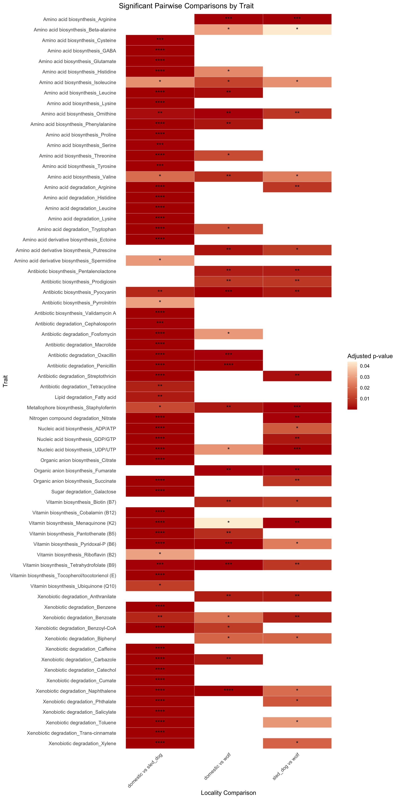
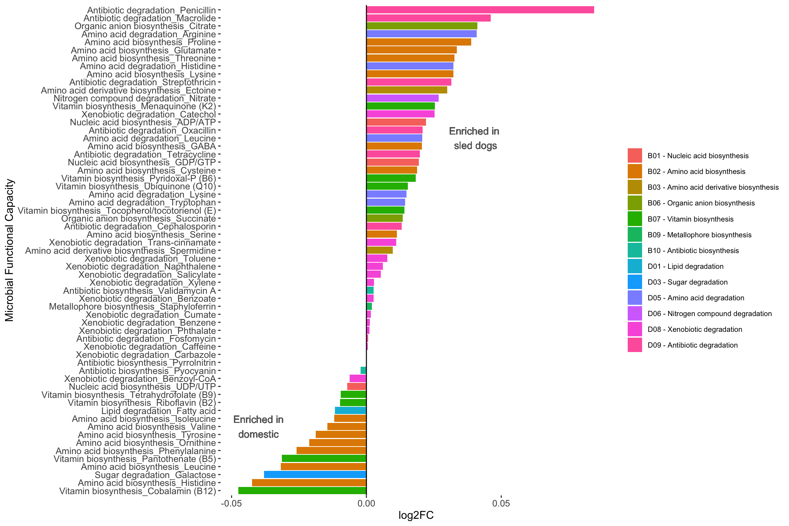
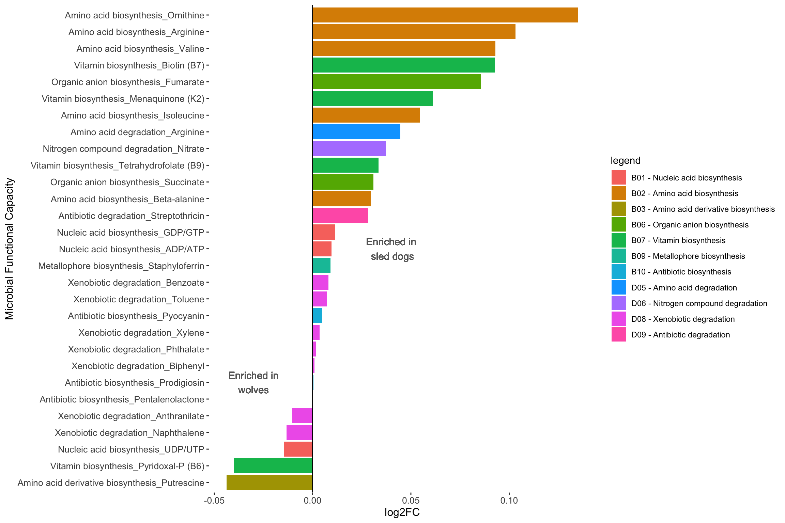
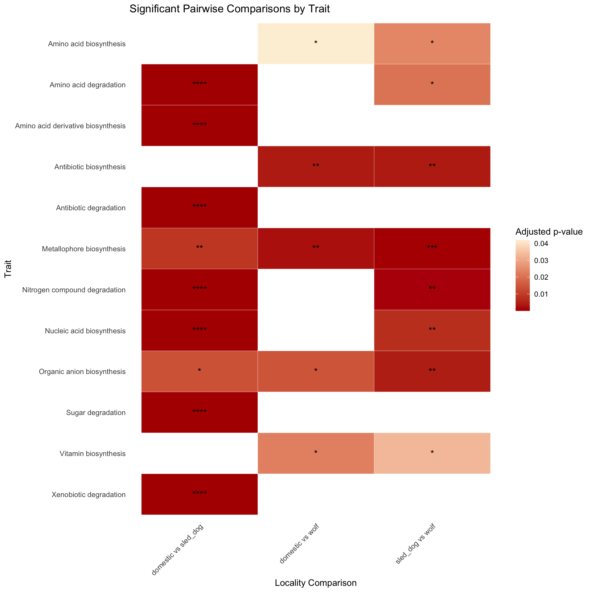
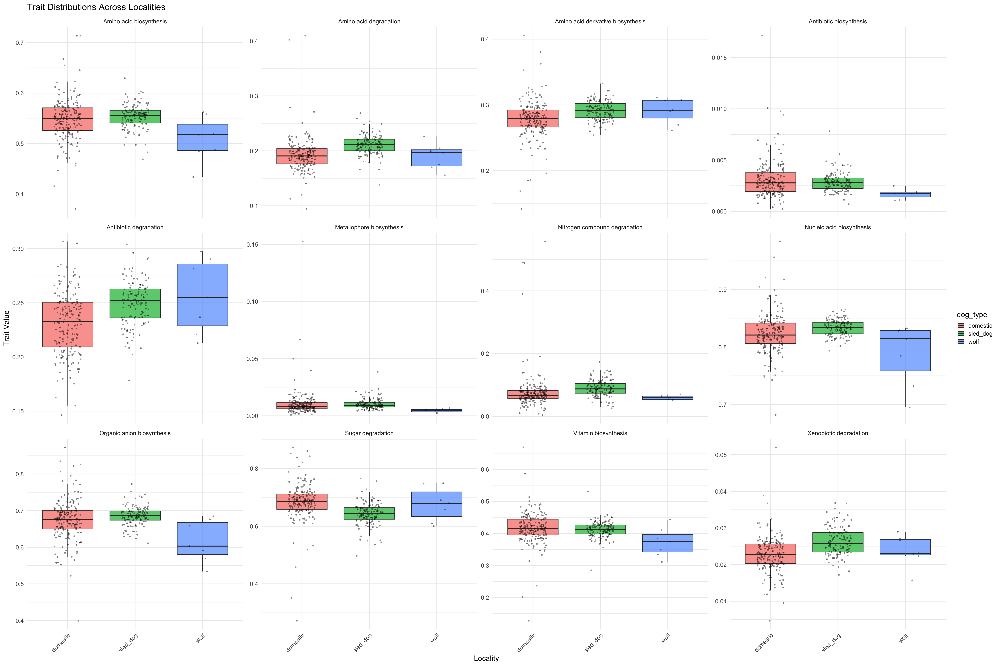

Chapter 8 Sled dogs vs domestic dogs vs wolves
8.1 MAG level
region_pairs_species <- combn(unique(sample_metadata$dog_type), 2, simplify = FALSE)
load("data/ancombc_pairwise_mag_sled_dogs_sepa.Rdata")results_species <- lapply(region_pairs_species, function(pair) {
subset_idx <- sample_metadata$dog_type %in% pair
fit <- ancombc2(data = prune_samples(subset_idx, physeq_genome),
fix_formula = "dog_type",
group = "dog_type",
global = FALSE,
pairwise = FALSE,
p_adj_method = "BH",
lib_cut = 0,
struc_zero = TRUE,
alpha = 0.05
)
# Extract main results table
res_table <- fit$res
# Add comparison label
res_table$comparison <- paste(pair, collapse = "_vs_")
return(res_table)
})
# Name each table for clarity
names(results_species) <- sapply(region_pairs_species, paste, collapse = "_vs_")
save(results_species,
file = "data/ancombc_pairwise_mag_sled_dogs_sepa.Rdata")8.1.1 domestic_vs_sled_dog
Enriched in domestic dogs
domestic <- results_species$domestic_vs_sled_dog %>%
filter(q_dog_typesled_dog < 0.05) %>%
filter(lfc_dog_typesled_dog < 0) %>%
arrange(lfc_dog_typesled_dog)615how many of the enriched bacteria were not annotated to species
noanno <- domestic %>%
left_join(genome_metadata, by=join_by("taxon"=="genome")) %>%
select(species, family, everything()) %>%
filter(species=="") %>%
nrow()
noanno %>%
cat()7887.31707domestic %>%
left_join(genome_metadata, by=join_by("taxon"=="genome"))%>%
select(species, genus, family, everything()) species genus family taxon lfc_(Intercept) lfc_dog_typesled_dog se_(Intercept) se_dog_typesled_dog W_(Intercept)
1 Megamonas funiformis Megamonas Selenomonadaceae SHD1_0021 2.3976465 -5.288436 0.2687938 0.3579162 8.920022
2 Megamonas funiformis Megamonas Selenomonadaceae SHD1_0166 2.2149207 -4.867628 0.2559413 0.3420279 8.654019
3 Megamonas funiformis Megamonas Selenomonadaceae SRR14842385_bin_76788 2.1779414 -4.819208 0.2456781 0.3216600 8.865021
4 Megamonas funiformis Megamonas Selenomonadaceae SHD1_0566 2.0751343 -4.550715 0.2274547 0.2988493 9.123288
5 Akkermansia muciniphila Akkermansia Akkermansiaceae PRJNA738608B_bin_509683 1.4344174 -4.346192 0.1876687 0.2407310 7.643349
6 Amulumruptor sp900539915 Amulumruptor Muribaculaceae ERR1915456_bin_85896 1.4253126 -4.210384 0.2472905 0.3026408 5.763718
7 RUG572 sp900771305 RUG572 UBA1067 SRR14842407_bin_80513 1.3871728 -4.126275 0.1346165 0.1935275 10.304627
8 Bifidobacterium pseudocatenulatum Bifidobacterium Bifidobacteriaceae SRR14842374_bin_6431 1.5345327 -3.927600 0.2951988 0.3497351 5.198303
9 Bhargavaea beijingensis Bhargavaea Planococcaceae PRJNA738608A_bin_323449 1.8591003 -3.832520 0.1503628 0.2131419 12.364096
10 Bifidobacterium sp002742445 Bifidobacterium Bifidobacteriaceae SRR14842328_bin_28594 1.0831038 -3.790759 0.2558856 0.3134665 4.232766
11 Allobaculum mucilyticum Allobaculum Erysipelotrichaceae PRJEB20308B_bin_471162 1.9347700 -3.780301 0.2731279 0.3506980 7.083750
12 Prevotella sp004554665 Prevotella Bacteroidaceae SRR14842407_bin_55464 0.9567584 -3.774376 0.1923236 0.2467351 4.974732
13 Catenibacterium faecis Catenibacterium Coprobacillaceae SRR14842334_bin_11860 1.6058560 -3.677150 0.2613401 0.3812412 6.144698
14 Bifidobacterium pseudocatenulatum Bifidobacterium Bifidobacteriaceae SRR14842398_bin_6536 1.6297407 -3.650050 0.2940313 0.3680292 5.542746
15 Bifidobacterium infantis Bifidobacterium Bifidobacteriaceae SRR14842351_bin_5528 1.2576495 -3.625098 0.2799527 0.3397979 4.492364
16 Bifidobacterium Bifidobacteriaceae SRR14842338_bin_15658 1.5725267 -3.601219 0.2306989 0.2898320 6.816361
17 Bifidobacterium pseudocatenulatum Bifidobacterium Bifidobacteriaceae SRR14842341_bin_43931 1.4494112 -3.542584 0.2667284 0.3240107 5.434033
18 Bifidobacterium breve Bifidobacterium Bifidobacteriaceae SRR14842334_bin_116 1.1397463 -3.498869 0.2434663 0.3000024 4.681331
19 Bhargavaea massiliensis Bhargavaea Planococcaceae SRR14842398_bin_15842 1.2636231 -3.488298 0.2275518 0.2874048 5.553122
20 Bifidobacterium adolescentis Bifidobacterium Bifidobacteriaceae SRR14842390_bin_21 1.4965031 -3.463548 0.2218745 0.3050352 6.744817
21 Prevotella copri_A Prevotella Bacteroidaceae SHD1_0468 1.5602735 -3.443409 0.2710637 0.3780131 5.756114
22 Anoxybacillus Anoxybacillaceae PRJNA738608A_bin_144803 1.4316519 -3.430170 0.1926631 0.2447511 7.430858
23 Allisonella histaminiformans Allisonella Dialisteraceae ERR1914136_bin_56377 0.7606102 -3.418704 0.2099694 0.2702214 3.622482
24 Bifidobacterium infantis Bifidobacterium Bifidobacteriaceae PRJNA738608B_bin_648905 1.3728002 -3.414229 0.2410126 0.3018952 5.695969
25 Collinsella sp902362275 Collinsella Coriobacteriaceae SRR14842359_bin_16582 1.4318567 -3.405977 0.2401788 0.3101667 5.961630
26 Prevotella copri_C Prevotella Bacteroidaceae SRR14842341_bin_195 1.5302855 -3.400139 0.2605727 0.3839812 5.872778
27 Collinsella sp003479805 Collinsella Coriobacteriaceae SRR14842404_bin_5151 1.5144251 -3.348330 0.2005865 0.2613285 7.549985
W_dog_typesled_dog p_(Intercept) p_dog_typesled_dog q_(Intercept) q_dog_typesled_dog diff_(Intercept) diff_dog_typesled_dog passed_ss_(Intercept) passed_ss_dog_typesled_dog
1 -14.775624 3.340777e-17 3.184223e-38 7.015631e-16 2.883712e-36 TRUE TRUE TRUE TRUE
2 -14.231671 2.246081e-16 3.788079e-36 4.068215e-15 2.613774e-34 TRUE TRUE TRUE TRUE
3 -14.982304 5.090270e-17 5.660282e-39 1.026640e-15 5.858391e-37 TRUE TRUE TRUE TRUE
4 -15.227456 7.462666e-18 5.286612e-40 1.716413e-16 7.660301e-38 TRUE TRUE TRUE TRUE
5 -18.054146 6.106345e-11 7.875376e-29 5.235559e-10 3.439119e-27 TRUE TRUE FALSE FALSE
6 -13.912151 2.526057e-08 1.250745e-32 1.224166e-07 7.879694e-31 TRUE TRUE TRUE TRUE
7 -21.321392 1.082448e-11 1.767951e-20 1.081701e-10 1.707841e-19 TRUE TRUE FALSE FALSE
8 -11.230215 4.252818e-07 7.283195e-24 1.621666e-06 1.388599e-22 TRUE TRUE TRUE TRUE
9 -17.981070 9.463433e-16 1.273846e-21 1.552209e-14 1.551095e-20 TRUE TRUE TRUE TRUE
10 -12.093027 3.488740e-05 9.775867e-26 9.075735e-05 2.575497e-24 TRUE TRUE FALSE FALSE
11 -10.779362 2.285230e-11 1.077365e-21 2.150194e-10 1.322967e-20 TRUE TRUE TRUE TRUE
12 -15.297279 1.812850e-06 3.939883e-32 6.151801e-06 2.378704e-30 TRUE TRUE FALSE FALSE
13 -9.645206 2.441341e-09 1.947784e-19 1.432187e-08 1.650491e-18 TRUE TRUE TRUE TRUE
14 -9.917828 6.463544e-08 2.861195e-20 2.908595e-07 2.709720e-19 TRUE TRUE TRUE TRUE
15 -10.668395 1.109178e-05 6.786624e-22 3.195227e-05 8.780195e-21 TRUE TRUE FALSE FALSE
16 -12.425195 1.624314e-10 1.608935e-25 1.238753e-09 4.019562e-24 TRUE TRUE TRUE TRUE
17 -10.933540 1.177401e-07 1.714967e-23 5.032607e-07 2.958318e-22 TRUE TRUE TRUE TRUE
18 -11.662804 4.902899e-06 6.168545e-25 1.521264e-05 1.441649e-23 TRUE TRUE FALSE FALSE
19 -12.137231 6.858130e-08 3.241294e-27 3.067108e-07 1.067417e-25 TRUE TRUE FALSE FALSE
20 -11.354586 1.922647e-10 5.504886e-23 1.443480e-09 8.308937e-22 TRUE TRUE TRUE TRUE
21 -9.109233 2.026599e-08 9.487108e-18 1.005665e-07 6.120362e-17 TRUE TRUE TRUE TRUE
22 -14.014935 1.342498e-10 9.139741e-23 1.062994e-09 1.311236e-21 TRUE TRUE FALSE FALSE
23 -12.651496 4.385320e-04 2.178311e-23 9.000466e-04 3.670200e-22 TRUE TRUE FALSE FALSE
24 -11.309317 5.060196e-08 1.224423e-22 2.313004e-07 1.722514e-21 TRUE TRUE FALSE TRUE
25 -10.981118 7.265650e-09 1.119862e-23 3.899232e-08 2.080359e-22 TRUE TRUE TRUE TRUE
26 -8.854963 1.076170e-08 5.925958e-17 5.609245e-08 3.448479e-16 TRUE TRUE TRUE TRUE
27 -12.812724 4.704769e-13 1.489182e-30 5.634059e-12 7.192748e-29 TRUE TRUE TRUE TRUE
comparison domain phylum class order Completeness Contamination Completeness_Model_Used Translation_Table_Used Coding_Density
1 domestic_vs_sled_dog Bacteria Bacillota Negativicutes Selenomonadales 100.00 0.01 Neural Network (Specific Model) 11 0.883
2 domestic_vs_sled_dog Bacteria Bacillota Negativicutes Selenomonadales 100.00 0.10 Neural Network (Specific Model) 11 0.883
3 domestic_vs_sled_dog Bacteria Bacillota Negativicutes Selenomonadales 93.41 1.57 Neural Network (Specific Model) 11 0.883
4 domestic_vs_sled_dog Bacteria Bacillota Negativicutes Selenomonadales 100.00 0.39 Neural Network (Specific Model) 11 0.886
5 domestic_vs_sled_dog Bacteria Verrucomicrobiota Verrucomicrobiae Verrucomicrobiales 99.99 1.17 Neural Network (Specific Model) 11 0.887
6 domestic_vs_sled_dog Bacteria Bacteroidota Bacteroidia Bacteroidales 99.97 0.03 Neural Network (Specific Model) 11 0.888
7 domestic_vs_sled_dog Bacteria Verrucomicrobiota Kiritimatiellia RFP12 84.12 1.76 Gradient Boost (General Model) 11 0.921
8 domestic_vs_sled_dog Bacteria Actinomycetota Actinomycetes Actinomycetales 99.98 0.37 Neural Network (Specific Model) 11 0.880
9 domestic_vs_sled_dog Bacteria Bacillota Bacilli Bacillales_A 80.22 2.49 Neural Network (Specific Model) 11 0.885
10 domestic_vs_sled_dog Bacteria Actinomycetota Actinomycetes Actinomycetales 76.94 7.37 Neural Network (Specific Model) 11 0.872
11 domestic_vs_sled_dog Bacteria Bacillota Bacilli_A Erysipelotrichales 90.67 0.38 Neural Network (Specific Model) 11 0.826
12 domestic_vs_sled_dog Bacteria Bacteroidota Bacteroidia Bacteroidales 82.30 4.71 Neural Network (Specific Model) 11 0.904
13 domestic_vs_sled_dog Bacteria Bacillota Bacilli_A Erysipelotrichales 100.00 0.48 Gradient Boost (General Model) 11 0.898
14 domestic_vs_sled_dog Bacteria Actinomycetota Actinomycetes Actinomycetales 99.62 0.64 Neural Network (Specific Model) 11 0.850
15 domestic_vs_sled_dog Bacteria Actinomycetota Actinomycetes Actinomycetales 94.23 2.01 Neural Network (Specific Model) 11 0.872
16 domestic_vs_sled_dog Bacteria Actinomycetota Actinomycetes Actinomycetales 99.99 1.00 Neural Network (Specific Model) 11 0.862
17 domestic_vs_sled_dog Bacteria Actinomycetota Actinomycetes Actinomycetales 99.99 0.49 Neural Network (Specific Model) 11 0.880
18 domestic_vs_sled_dog Bacteria Actinomycetota Actinomycetes Actinomycetales 89.98 1.83 Neural Network (Specific Model) 11 0.875
19 domestic_vs_sled_dog Bacteria Bacillota Bacilli Bacillales_A 97.25 3.11 Gradient Boost (General Model) 11 0.735
20 domestic_vs_sled_dog Bacteria Actinomycetota Actinomycetes Actinomycetales 98.68 0.69 Neural Network (Specific Model) 11 0.884
21 domestic_vs_sled_dog Bacteria Bacteroidota Bacteroidia Bacteroidales 99.97 0.30 Neural Network (Specific Model) 11 0.871
22 domestic_vs_sled_dog Bacteria Bacillota Bacilli Bacillales 79.31 1.98 Neural Network (Specific Model) 11 0.899
23 domestic_vs_sled_dog Bacteria Bacillota Negativicutes Veillonellales 95.05 0.85 Neural Network (Specific Model) 11 0.850
24 domestic_vs_sled_dog Bacteria Actinomycetota Actinomycetes Actinomycetales 79.04 10.03 Neural Network (Specific Model) 11 0.881
25 domestic_vs_sled_dog Bacteria Actinomycetota Coriobacteriia Coriobacteriales 80.28 3.91 Neural Network (Specific Model) 11 0.873
26 domestic_vs_sled_dog Bacteria Bacteroidota Bacteroidia Bacteroidales 82.93 1.73 Neural Network (Specific Model) 11 0.893
27 domestic_vs_sled_dog Bacteria Actinomycetota Coriobacteriia Coriobacteriales 90.84 2.74 Neural Network (Specific Model) 11 0.873
Contig_N50 Average_Gene_Length length GC_Content Total_Coding_Sequences Total_Contigs Max_Contig_Length Additional_Notes
1 2300923 312.0529 2300923 0.32 2173 1 2300923 None
2 2679950 296.5011 2679950 0.31 2664 1 2679950 None
3 36972 288.4240 2755039 0.30 2814 133 159160 None
4 2583724 300.9642 2583724 0.31 2539 1 2583724 None
5 22340 337.3635 2641582 0.56 2319 172 143013 None
6 37035 344.4079 2195299 0.52 1890 85 153817 None
7 8548 348.5007 3347400 0.62 2954 550 37861 None
8 40314 356.2280 2202600 0.57 1816 93 188002 None
9 5730 259.9750 2422990 0.55 2755 527 31498 None
10 6509 295.7513 1915071 0.56 1886 378 31579 None
11 40213 339.3688 2715077 0.49 2207 136 111761 None
12 9100 333.1131 2498764 0.53 2263 365 47444 None
13 17467 298.4239 2169978 0.34 2182 166 71526 None
14 202066 351.0336 2172756 0.56 1757 47 368910 None
15 32536 332.3696 2383282 0.60 2086 127 104027 None
16 54698 366.5951 2117575 0.61 1662 64 169077 None
17 585876 367.8807 2206650 0.56 1761 12 725673 None
18 8287 300.2990 2158736 0.59 2100 341 109624 None
19 2571 218.6014 4876160 0.52 5482 1819 20401 None
20 79666 355.2701 1931343 0.60 1603 48 181920 None
21 2785849 356.7728 3982994 0.46 3244 3 2785849 None
22 4158 226.5746 1878910 0.42 2494 523 19580 None
23 60295 302.2131 1478987 0.47 1389 45 134017 None
24 6048 301.9955 1821108 0.60 1773 372 32801 None
25 9046 298.9257 1780821 0.60 1736 269 47615 None
26 5827 312.2343 2737256 0.46 2612 590 29721 None
27 73105 336.0389 2105906 0.62 1826 60 318155 None
[ reached 'max' / getOption("max.print") -- omitted 588 rows ]domestic %>%
left_join(genome_metadata, by=join_by("taxon"=="genome")) %>%
select(species, genus, family, phylum, everything()) %>%
filter(species=="") %>%
group_by(phylum, family, genus) %>%
summarise(count=n()) %>%
arrange(-count)`summarise()` has grouped output by 'phylum', 'family'. You can override using the `.groups` argument.# A tibble: 59 × 4
# Groups: phylum, family [37]
phylum family genus count
<chr> <chr> <chr> <int>
1 Actinomycetota Coriobacteriaceae Collinsella 7
2 Bacillota CAG-508 CAG-269 6
3 Actinomycetota Atopobiaceae Granulimonas 4
4 Bacillota Acutalibacteraceae UBA6857 2
5 Bacillota DSM-1321 Bacillus_AD 2
6 Bacillota Lachnospiraceae KM106-2 2
7 Bacillota Selenomonadaceae Megamonas 2
8 Bacteroidota UBA932 Cryptobacteroides 2
9 Actinomycetota Bifidobacteriaceae Bifidobacterium 1
10 Actinomycetota Eggerthellaceae CALADF01 1
# ℹ 49 more rowsdomestic %>%
left_join(genome_metadata, by=join_by("taxon"=="genome")) %>%
select(genus, family, everything()) %>%
filter(genus=="") genus family taxon lfc_(Intercept) lfc_dog_typesled_dog se_(Intercept) se_dog_typesled_dog W_(Intercept) W_dog_typesled_dog p_(Intercept) p_dog_typesled_dog
1 Lachnospiraceae PRJNA738608B_bin_27758 0.4389219 -1.4177677 0.1749503 0.2321069 2.508837 -6.108254 0.01361252 1.654801e-08
2 Erysipelotrichaceae PRJEB20308A_bin_330673 0.3602632 -0.8446997 0.2861100 0.3365324 1.259177 -2.510010 0.20890764 1.257874e-02
q_(Intercept) q_dog_typesled_dog diff_(Intercept) diff_dog_typesled_dog passed_ss_(Intercept) passed_ss_dog_typesled_dog comparison domain phylum class order
1 0.0209390 3.854995e-08 TRUE TRUE FALSE FALSE domestic_vs_sled_dog Bacteria Bacillota Clostridia Lachnospirales
2 0.2514179 1.647975e-02 FALSE TRUE FALSE TRUE domestic_vs_sled_dog Bacteria Bacillota Bacilli_A Erysipelotrichales
species Completeness Contamination Completeness_Model_Used Translation_Table_Used Coding_Density Contig_N50 Average_Gene_Length length GC_Content Total_Coding_Sequences Total_Contigs
1 94.74 3.81 Gradient Boost (General Model) 11 0.849 15611 310.6482 3990894 0.37 3641 397
2 91.30 1.01 Neural Network (Specific Model) 11 0.863 33196 307.1915 2407943 0.49 2261 150
Max_Contig_Length Additional_Notes
1 88539 None
2 106080 Nonedomestic %>%
left_join(genome_metadata, by=join_by("taxon"=="genome"))%>%
group_by(family, species) %>%
summarise(Mags=n()) %>%
arrange(-Mags)`summarise()` has grouped output by 'family'. You can override using the `.groups` argument.# A tibble: 328 × 3
# Groups: family [64]
family species Mags
<chr> <chr> <int>
1 Coriobacteriaceae "Collinsella intestinalis" 89
2 Helicobacteraceae "Helicobacter_C magdeburgensis" 18
3 Coriobacteriaceae "Collinsella sp902470815" 15
4 Peptostreptococcaceae "Peptacetobacter hiranonis" 15
5 Helicobacteraceae "Helicobacter_A rappini" 14
6 Lachnospiraceae "" 12
7 Helicobacteraceae "Helicobacter_B sp937906905" 11
8 Coriobacteriaceae "" 7
9 CAG-508 "" 6
10 Helicobacteraceae "Helicobacter_B canis" 6
# ℹ 318 more rowsdomestic %>%
left_join(genome_metadata, by=join_by("taxon"=="genome"))%>%
group_by(family, genus, species) %>%
summarise(Mags=n()) %>%
arrange(-Mags)`summarise()` has grouped output by 'family', 'genus'. You can override using the `.groups` argument.# A tibble: 350 × 4
# Groups: family, genus [185]
family genus species Mags
<chr> <chr> <chr> <int>
1 Coriobacteriaceae Collinsella "Collinsella intestinalis" 89
2 Helicobacteraceae Helicobacter_C "Helicobacter_C magdeburgensis" 18
3 Coriobacteriaceae Collinsella "Collinsella sp902470815" 15
4 Peptostreptococcaceae Peptacetobacter "Peptacetobacter hiranonis" 15
5 Helicobacteraceae Helicobacter_A "Helicobacter_A rappini" 14
6 Helicobacteraceae Helicobacter_B "Helicobacter_B sp937906905" 11
7 Coriobacteriaceae Collinsella "" 7
8 CAG-508 CAG-269 "" 6
9 Helicobacteraceae Helicobacter_B "Helicobacter_B canis" 6
10 Coriobacteriaceae Collinsella "Collinsella stercoris" 5
# ℹ 340 more rowsEnriched in sled dogs
sled <- results_species$domestic_vs_sled_dog %>%
filter(q_dog_typesled_dog < 0.05) %>%
filter(lfc_dog_typesled_dog>0) %>%
arrange(-lfc_dog_typesled_dog)553how many of the enriched bacteria were not annotated to species
noanno <- sled %>%
left_join(genome_metadata, by=join_by("taxon"=="genome")) %>%
select(species, family, everything()) %>%
filter(species=="") %>%
nrow()
noanno %>%
cat()203sled %>%
left_join(genome_metadata, by=join_by("taxon"=="genome")) %>%
select(genus, family, everything()) %>%
filter(genus=="") %>%
nrow()[1] 4Percentage of bacteria annotated to species level
63.29114sled %>%
left_join(genome_metadata, by=join_by("taxon"=="genome"))%>%
select(species, genus, family, everything()) species genus family taxon lfc_(Intercept) lfc_dog_typesled_dog se_(Intercept) se_dog_typesled_dog W_(Intercept)
1 Sutterella sp937943605 Sutterella Burkholderiaceae EHA05663_bin.61 -3.144640 6.139475 0.2363298 0.2901277 -13.306150
2 Phascolarctobacterium_A sp900552855 Phascolarctobacterium_A Acidaminococcaceae EHA05667_bin.34 -2.650671 5.529410 0.2379745 0.3161249 -11.138467
3 CALUXS01 Anaeroplasmataceae GL_05_09_bin_10186 -2.784479 5.357718 0.1897938 0.2859769 -14.671071
4 Mucispirillaceae EHA01929_bin.70 -3.305809 4.639741 0.1502933 0.3838819 -21.995723
5 Anaerobiospirillum Succinivibrionaceae EHA01928_bin.22 -3.001695 4.595610 0.1669066 0.3627100 -17.984277
6 Microcoleus sp015207505 Microcoleus Microcoleaceae GL_08_11_bin_54749 -2.616853 4.537003 0.1703631 0.2391244 -15.360444
7 Fimiplasma Coprobacillaceae EHA05637_bin.17 -2.208177 4.269649 0.1419954 0.3432901 -15.551043
8 Sutterella Burkholderiaceae GL_07_05_bin_176013 -2.194844 4.251043 0.1600061 0.2543554 -13.717247
9 UMGS1590 Peptococcaceae EHA05615_bin.83 -2.256990 4.217385 0.2175570 0.3534488 -10.374249
10 Parabacteroides Tannerellaceae EHA01906_bin.11 -2.166723 4.216819 0.1814991 0.2626978 -11.937929
11 JAHHTG01 Erysipelotrichaceae GL_08_03_bin_7776 -2.297999 4.204963 0.1500185 0.3689691 -15.318106
12 Fusobacterium_B sp900554885 Fusobacterium_B Fusobacteriaceae GL_03_11_bin_51757 -1.908441 4.187198 0.1919881 0.2566234 -9.940413
13 Sutterella sp937943605 Sutterella Burkholderiaceae PRJNA871950C_bin_28113 -2.298507 4.167770 0.2343639 0.2873711 -9.807426
14 Faecalibacterium Ruminococcaceae GL_01_07_bin_43442 -2.431206 4.094458 0.1574752 0.2444007 -15.438665
15 Fusobacterium_B sp900554885 Fusobacterium_B Fusobacteriaceae GL_06_02_bin_80673 -2.154818 4.056603 0.2017106 0.2668070 -10.682719
16 Slackia sp029266945 Slackia Eggerthellaceae GL_02_04_bin_22985 -2.217719 4.045301 0.1770454 0.2745994 -12.526270
17 CALUXS01 Anaeroplasmataceae EHA01872_bin.6 -2.200292 3.963129 0.2190144 0.3252911 -10.046336
18 Sutterella Burkholderiaceae PRJEB20308A_bin_217061 -1.999385 3.917478 0.1893959 0.3380714 -10.556642
19 Anaerobiospirillum Succinivibrionaceae EHA01907_bin.7 -3.052215 3.879613 0.2200077 0.3726022 -13.873221
20 Fusobacterium_B sp900541465 Fusobacterium_B Fusobacteriaceae EHA05646_bin.100 -1.722828 3.828573 0.1834598 0.2481810 -9.390767
21 Fusobacterium_B sp900554885 Fusobacterium_B Fusobacteriaceae GL_05_10_bin_53346 -1.804402 3.790333 0.1918065 0.2568423 -9.407408
22 Fusobacterium_B sp900554885 Fusobacterium_B Fusobacteriaceae GL_07_04_bin_32492 -1.667744 3.781333 0.1816688 0.2508453 -9.180138
23 Fusobacterium_B sp900554885 Fusobacterium_B Fusobacteriaceae GL_05_09_bin_41860 -1.882501 3.761526 0.1977937 0.2608784 -9.517497
24 Fusobacterium_B sp900554885 Fusobacterium_B Fusobacteriaceae EHA05646_bin.98 -1.709895 3.737140 0.1775123 0.2488494 -9.632546
25 Sutterella sp937943605 Sutterella Burkholderiaceae SRR14842375_bin_15313 -1.652326 3.700564 0.2267196 0.2801706 -7.287970
26 Onthovivens CAG-826 EHA01929_bin.8 -2.777320 3.693796 0.1636144 0.3714415 -16.974795
27 Phocaeicola Bacteroidaceae EHA01888_bin.4 -1.801456 3.692645 0.1899748 0.3212254 -9.482603
W_dog_typesled_dog p_(Intercept) p_dog_typesled_dog q_(Intercept) q_dog_typesled_dog diff_(Intercept) diff_dog_typesled_dog passed_ss_(Intercept) passed_ss_dog_typesled_dog
1 21.16128 5.783968e-32 4.175933e-61 5.238106e-30 6.050927e-58 TRUE TRUE TRUE TRUE
2 17.49122 1.936562e-24 4.701817e-48 1.122431e-22 1.703233e-45 TRUE TRUE TRUE TRUE
3 18.73479 1.756709e-36 3.277089e-51 1.818194e-34 1.582834e-48 TRUE TRUE TRUE TRUE
4 12.08638 1.122287e-57 3.561070e-26 1.626194e-54 1.011763e-24 TRUE TRUE FALSE FALSE
5 12.67021 1.128645e-46 1.244477e-28 8.177034e-44 5.009021e-27 TRUE TRUE FALSE TRUE
6 18.97340 9.108740e-39 1.023457e-51 1.362356e-36 7.414942e-49 TRUE TRUE TRUE TRUE
7 12.43744 3.295217e-40 8.069707e-29 7.957950e-38 3.439119e-27 TRUE TRUE TRUE TRUE
8 16.71300 1.743119e-33 1.274596e-44 1.683853e-31 3.693779e-42 TRUE TRUE TRUE TRUE
9 11.93210 1.242478e-21 6.132584e-27 5.143858e-20 1.957786e-25 TRUE TRUE TRUE TRUE
10 16.05197 3.980430e-27 2.990891e-42 2.746497e-25 5.417251e-40 TRUE TRUE TRUE TRUE
11 11.39652 9.402039e-39 6.482614e-25 1.362356e-36 1.491001e-23 TRUE TRUE TRUE TRUE
12 16.31651 1.816921e-20 5.651010e-44 6.421265e-19 1.364719e-41 TRUE TRUE TRUE TRUE
13 14.50309 9.567252e-20 4.764462e-36 3.013684e-18 3.138048e-34 TRUE TRUE TRUE TRUE
14 16.75305 6.115645e-39 1.229170e-43 1.107696e-36 2.544382e-41 TRUE TRUE TRUE TRUE
15 15.20426 9.555980e-23 5.567005e-39 4.945219e-21 5.858391e-37 TRUE TRUE TRUE TRUE
16 14.73165 8.731161e-29 1.312513e-36 6.658659e-27 1.056573e-34 TRUE TRUE TRUE TRUE
17 12.18333 1.687643e-20 1.021227e-27 6.161035e-19 3.699396e-26 TRUE TRUE TRUE TRUE
18 11.58772 2.369425e-22 6.785895e-26 1.107515e-20 1.820882e-24 TRUE TRUE TRUE TRUE
19 10.41221 1.716818e-31 9.754632e-21 1.463335e-29 9.884239e-20 TRUE TRUE FALSE TRUE
20 15.42653 1.125885e-18 1.383476e-40 2.966194e-17 2.227396e-38 TRUE TRUE TRUE TRUE
21 14.75744 1.114602e-18 8.371645e-38 2.966194e-17 7.135596e-36 TRUE TRUE TRUE TRUE
22 15.07436 5.223150e-18 2.808286e-39 1.240712e-16 3.391006e-37 TRUE TRUE TRUE TRUE
23 14.41869 5.648340e-19 2.687668e-36 1.573932e-17 2.049700e-34 TRUE TRUE TRUE TRUE
24 15.01768 1.980034e-19 7.102926e-39 5.738139e-18 6.861427e-37 TRUE TRUE TRUE TRUE
25 13.20825 2.462039e-12 4.149986e-32 2.623157e-11 2.405332e-30 TRUE TRUE TRUE TRUE
26 9.94449 3.916337e-39 7.912988e-19 8.106817e-37 5.761768e-18 TRUE TRUE FALSE FALSE
27 11.49550 6.874161e-19 1.060992e-25 1.879370e-17 2.745317e-24 TRUE TRUE TRUE TRUE
comparison domain phylum class order Completeness Contamination Completeness_Model_Used Translation_Table_Used Coding_Density
1 domestic_vs_sled_dog Bacteria Pseudomonadota Gammaproteobacteria Burkholderiales 95.37 0.86 Gradient Boost (General Model) 11 0.875
2 domestic_vs_sled_dog Bacteria Bacillota Negativicutes Acidaminococcales 99.75 0.13 Gradient Boost (General Model) 11 0.860
3 domestic_vs_sled_dog Bacteria Bacillota Bacilli_A Acholeplasmatales 99.75 0.16 Gradient Boost (General Model) 11 0.909
4 domestic_vs_sled_dog Bacteria Deferribacterota Deferribacteres Deferribacterales 96.75 0.57 Gradient Boost (General Model) 11 0.875
5 domestic_vs_sled_dog Bacteria Pseudomonadota Gammaproteobacteria Enterobacterales 87.96 0.23 Gradient Boost (General Model) 4 0.754
6 domestic_vs_sled_dog Bacteria Cyanobacteriota Cyanobacteriia Cyanobacteriales 100.00 0.10 Neural Network (Specific Model) 11 0.793
7 domestic_vs_sled_dog Bacteria Bacillota Bacilli_A Erysipelotrichales 100.00 0.01 Gradient Boost (General Model) 11 0.915
8 domestic_vs_sled_dog Bacteria Pseudomonadota Gammaproteobacteria Burkholderiales 93.08 2.46 Neural Network (Specific Model) 11 0.872
9 domestic_vs_sled_dog Bacteria Bacillota Peptococcia Peptococcales 100.00 0.00 Gradient Boost (General Model) 11 0.887
10 domestic_vs_sled_dog Bacteria Bacteroidota Bacteroidia Bacteroidales 94.46 0.13 Neural Network (Specific Model) 11 0.911
11 domestic_vs_sled_dog Bacteria Bacillota Bacilli_A Erysipelotrichales 97.80 0.13 Gradient Boost (General Model) 11 0.918
12 domestic_vs_sled_dog Bacteria Fusobacteriota Fusobacteriia Fusobacteriales 96.63 3.15 Gradient Boost (General Model) 11 0.892
13 domestic_vs_sled_dog Bacteria Pseudomonadota Gammaproteobacteria Burkholderiales 99.26 0.68 Gradient Boost (General Model) 11 0.876
14 domestic_vs_sled_dog Bacteria Bacillota Clostridia Oscillospirales 97.86 0.05 Gradient Boost (General Model) 11 0.885
15 domestic_vs_sled_dog Bacteria Fusobacteriota Fusobacteriia Fusobacteriales 90.71 5.27 Gradient Boost (General Model) 11 0.904
16 domestic_vs_sled_dog Bacteria Actinomycetota Coriobacteriia Coriobacteriales 97.64 0.64 Gradient Boost (General Model) 11 0.874
17 domestic_vs_sled_dog Bacteria Bacillota Bacilli_A Acholeplasmatales 98.39 0.13 Gradient Boost (General Model) 11 0.902
18 domestic_vs_sled_dog Bacteria Pseudomonadota Gammaproteobacteria Burkholderiales 94.71 0.30 Gradient Boost (General Model) 11 0.864
19 domestic_vs_sled_dog Bacteria Pseudomonadota Gammaproteobacteria Enterobacterales 94.51 0.40 Gradient Boost (General Model) 11 0.785
20 domestic_vs_sled_dog Bacteria Fusobacteriota Fusobacteriia Fusobacteriales 80.19 5.32 Gradient Boost (General Model) 11 0.899
21 domestic_vs_sled_dog Bacteria Fusobacteriota Fusobacteriia Fusobacteriales 83.82 6.72 Gradient Boost (General Model) 11 0.899
22 domestic_vs_sled_dog Bacteria Fusobacteriota Fusobacteriia Fusobacteriales 88.92 3.94 Gradient Boost (General Model) 11 0.907
23 domestic_vs_sled_dog Bacteria Fusobacteriota Fusobacteriia Fusobacteriales 75.80 3.55 Neural Network (Specific Model) 11 0.898
24 domestic_vs_sled_dog Bacteria Fusobacteriota Fusobacteriia Fusobacteriales 87.80 3.38 Gradient Boost (General Model) 11 0.906
25 domestic_vs_sled_dog Bacteria Pseudomonadota Gammaproteobacteria Burkholderiales 94.58 2.45 Gradient Boost (General Model) 11 0.875
26 domestic_vs_sled_dog Bacteria Bacillota Bacilli_A RFN20 94.80 0.35 Gradient Boost (General Model) 11 0.900
27 domestic_vs_sled_dog Bacteria Bacteroidota Bacteroidia Bacteroidales 94.69 0.07 Neural Network (Specific Model) 11 0.885
Contig_N50 Average_Gene_Length length GC_Content Total_Coding_Sequences Total_Contigs Max_Contig_Length Additional_Notes
1 22917 318.3883 2064824 0.49 1893 171 87912 None
2 52196 304.2255 2072374 0.41 1956 72 159878 None
3 54353 332.2939 1508681 0.27 1378 50 218878 None
4 154038 327.6566 2341968 0.26 2088 47 368605 None
5 14452 324.3900 4555440 0.52 3549 484 83701 None
6 38602 308.9006 6941718 0.45 5947 298 205511 None
7 51321 319.0571 1517094 0.37 1454 49 138051 None
8 36009 321.6935 2144612 0.58 1941 124 264081 None
9 82550 302.6591 1885873 0.48 1845 52 174275 None
10 40461 350.2007 2554279 0.44 2217 118 93920 None
11 100415 308.2185 1444486 0.29 1437 34 156003 None
12 8386 281.8288 1807418 0.29 1910 311 47424 None
13 28549 322.6431 2124888 0.49 1925 161 176946 None
14 215846 323.1049 2012863 0.50 1840 12 319480 None
15 7442 282.2799 1486743 0.29 1590 269 26400 None
16 60496 342.8588 1773810 0.63 1508 48 228019 None
17 40565 325.8306 1570519 0.27 1452 59 85792 None
18 30310 318.8800 1713446 0.52 1550 99 126158 None
19 47648 394.6075 3041976 0.44 2018 116 215826 None
20 8898 288.9476 1432429 0.30 1488 239 28919 None
21 5226 268.3193 1637502 0.30 1832 374 25448 None
22 5875 274.2837 1619079 0.29 1787 350 24995 None
23 7978 279.7024 1574088 0.29 1687 269 25704 None
24 7984 289.8057 1350948 0.29 1410 219 36701 None
25 5577 281.4788 2040220 0.49 2118 440 51601 None
26 150672 364.8239 1593132 0.29 1312 25 246388 None
27 54698 365.1304 2704864 0.51 2186 89 131576 None
[ reached 'max' / getOption("max.print") -- omitted 526 rows ]sled %>%
left_join(genome_metadata, by=join_by("taxon"=="genome")) %>%
select(species, genus, family, phylum, everything()) %>%
filter(species=="") %>%
group_by(phylum, family, genus) %>%
summarise(count=n()) %>%
arrange(-count)`summarise()` has grouped output by 'phylum', 'family'. You can override using the `.groups` argument.# A tibble: 111 × 4
# Groups: phylum, family [57]
phylum family genus count
<chr> <chr> <chr> <int>
1 Bacillota Oscillospiraceae Faecousia 23
2 Pseudomonadota Succinivibrionaceae Anaerobiospirillum 8
3 Actinomycetota Coriobacteriaceae Collinsella 6
4 Bacillota Anaeroplasmataceae CALUXS01 6
5 Bacteroidota Bacteroidaceae Phocaeicola 6
6 Campylobacterota Helicobacteraceae Helicobacter_C 5
7 Bacillota Anaerotignaceae Anaerotignum 3
8 Bacillota Aristaeellaceae Ventricola 3
9 Bacillota Butyricicoccaceae Butyricicoccus 3
10 Bacillota CAG-826 Onthovivens 3
# ℹ 101 more rowssled %>%
left_join(genome_metadata, by=join_by("taxon"=="genome"))%>%
group_by(family, genus, species) %>%
summarise(Mags=n()) %>%
arrange(-Mags)`summarise()` has grouped output by 'family', 'genus'. You can override using the `.groups` argument.# A tibble: 219 × 4
# Groups: family, genus [155]
family genus species Mags
<chr> <chr> <chr> <int>
1 Fusobacteriaceae Fusobacterium_B "Fusobacterium_B sp900554885" 49
2 Fusobacteriaceae Fusobacterium_B "Fusobacterium_B sp900541465" 37
3 Clostridiaceae Sarcina "Sarcina perfringens" 30
4 Fusobacteriaceae Fusobacterium_A "Fusobacterium_A sp900555845" 27
5 Oscillospiraceae Faecousia "" 23
6 Oscillospiraceae Faecousia "Faecousia sp937890525" 22
7 Peptostreptococcaceae Peptacetobacter "Peptacetobacter sp900550335" 13
8 Succinivibrionaceae Anaerobiospirillum "Anaerobiospirillum sp900543125" 11
9 Coriobacteriaceae Collinsella "Collinsella sp902364775" 9
10 Succinivibrionaceae Anaerobiospirillum "" 8
# ℹ 209 more rowssled %>%
left_join(genome_metadata, by=join_by("taxon"=="genome"))%>%
group_by(family, genus) %>%
summarise(Mags=n()) %>%
arrange(-Mags)`summarise()` has grouped output by 'family'. You can override using the `.groups` argument.# A tibble: 155 × 3
# Groups: family [68]
family genus Mags
<chr> <chr> <int>
1 Fusobacteriaceae Fusobacterium_B 92
2 Oscillospiraceae Faecousia 45
3 Fusobacteriaceae Fusobacterium_A 40
4 Clostridiaceae Sarcina 30
5 Coriobacteriaceae Collinsella 26
6 Succinivibrionaceae Anaerobiospirillum 24
7 Peptostreptococcaceae Peptacetobacter 19
8 Bacteroidaceae Phocaeicola 11
9 Burkholderiaceae Sutterella 11
10 Clostridiaceae Clostridium 7
# ℹ 145 more rowssled %>%
left_join(genome_metadata, by=join_by("taxon"=="genome")) %>%
select(genus, family, everything()) %>%
filter(genus=="") genus family taxon lfc_(Intercept) lfc_dog_typesled_dog se_(Intercept) se_dog_typesled_dog W_(Intercept) W_dog_typesled_dog p_(Intercept) p_dog_typesled_dog
1 Mucispirillaceae EHA01929_bin.70 -3.3058088 4.639741 0.1502933 0.3838819 -21.995723 12.086376 1.122287e-57 3.561070e-26
2 CAG-465 EHA05646_bin.44 -2.9343017 3.407673 0.1678816 0.3752073 -17.478402 9.082109 4.196919e-38 5.519146e-16
3 Cyclobacteriaceae GL_02_02_bin_86348 -0.8679792 1.579564 0.1726378 0.2542850 -5.027748 6.211787 8.626733e-07 1.778460e-09
4 Anaerotignaceae SHD1_2292 -0.2434732 0.605258 0.1732601 0.2439265 -1.405247 2.481313 1.609060e-01 1.359678e-02
q_(Intercept) q_dog_typesled_dog diff_(Intercept) diff_dog_typesled_dog passed_ss_(Intercept) passed_ss_dog_typesled_dog comparison domain phylum class
1 1.626194e-54 1.011763e-24 TRUE TRUE FALSE FALSE domestic_vs_sled_dog Bacteria Deferribacterota Deferribacteres
2 5.067779e-36 2.866395e-15 TRUE TRUE FALSE FALSE domestic_vs_sled_dog Bacteria Bacillota Clostridia
3 3.094093e-06 4.618258e-09 TRUE TRUE FALSE FALSE domestic_vs_sled_dog Bacteria Bacteroidota Bacteroidia
4 1.989358e-01 1.776531e-02 FALSE TRUE TRUE TRUE domestic_vs_sled_dog Bacteria Bacillota Clostridia
order species Completeness Contamination Completeness_Model_Used Translation_Table_Used Coding_Density Contig_N50 Average_Gene_Length length GC_Content
1 Deferribacterales 96.75 0.57 Gradient Boost (General Model) 11 0.875 154038 327.6566 2341968 0.26
2 TANB77 99.26 2.20 Gradient Boost (General Model) 11 0.907 75440 298.1977 1539953 0.25
3 Cytophagales 98.90 1.13 Gradient Boost (General Model) 11 0.883 9847 311.8193 4370301 0.45
4 Lachnospirales 75.24 1.48 Gradient Boost (General Model) 11 0.812 31116 235.8719 2220741 0.32
Total_Coding_Sequences Total_Contigs Max_Contig_Length Additional_Notes
1 2088 47 368605 None
2 1563 33 239623 None
3 4133 612 59270 None
4 2560 126 101021 None8.1.2 sled_dog vs wolves
Enriched in sled dogs
sled <- results_species$sled_dog_vs_wolf %>%
filter(q_dog_typewolf < 0.05) %>%
filter(lfc_dog_typewolf < 0) %>%
arrange(lfc_dog_typewolf)324how many of the enriched bacteria were not annotated to species
noanno <- sled %>%
left_join(genome_metadata, by=join_by("taxon"=="genome")) %>%
select(species, family, everything()) %>%
filter(species=="") %>%
nrow()
noanno %>%
cat()11936.7284sled %>%
left_join(genome_metadata, by=join_by("taxon"=="genome"))%>%
select(species, family, everything()) species family taxon lfc_(Intercept) lfc_dog_typewolf se_(Intercept) se_dog_typewolf W_(Intercept) W_dog_typewolf p_(Intercept)
1 Coprobacillaceae EHA05637_bin.17 0.255976692 -6.161276 NA 0.5092091 NA -12.099697 1
2 Succinivibrionaceae EHA01928_bin.22 0.187595134 -5.397041 NA 0.4430313 NA -12.182077 1
3 Ralstonia mannitolilytica Burkholderiaceae GL_08_X_bin_2706 -0.222768756 -5.354427 NA 0.4831427 NA -11.082495 1
4 Turicibacter bilis Turicibacteraceae PRJEB20308A_bin_152229 0.101300977 -4.858978 NA 0.4084644 NA -11.895720 1
5 Turicibacter sp002311155 Turicibacteraceae EHA05625_bin.101 0.075874603 -4.804152 NA 0.5077201 NA -9.462206 1
6 Fournierella massiliensis Ruminococcaceae SRR14842426_bin_61522 0.163264564 -4.780666 NA 0.4125583 NA -11.587856 1
7 Lachnospiraceae EHA01890_bin.6 0.194202890 -4.690117 NA 0.4027610 NA -11.644915 1
8 Anaerobiospirillum sp023051105 Succinivibrionaceae EHA01890_bin.19 0.008892981 -4.659677 NA 0.4829418 NA -9.648526 1
9 Aphodousia sp937906995 Burkholderiaceae EHA01911_bin.11 0.190596092 -4.611283 NA 1.2918344 NA -3.569562 1
10 Mucispirillum sp937890655 Mucispirillaceae EHA05620_bin.81 0.020400427 -4.577098 NA 0.8067553 NA -5.673465 1
11 Lactobacillus acidophilus Lactobacillaceae EHA01958_bin.97 -0.209228683 -4.491331 NA 0.4788991 NA -9.378448 1
12 Anaerovoracaceae GL_02_04_bin_25064 0.181587493 -4.414381 NA 0.4469727 NA -9.876176 1
13 Lactobacillaceae ERR1915888_bin_45647 -0.122244768 -4.374679 NA 0.5093464 NA -8.588811 1
14 Anaeroplasmataceae EHA01872_bin.6 0.142192828 -4.294119 NA 1.4262078 NA -3.010865 1
15 Anaeroplasmataceae GL_05_09_bin_10186 0.165489957 -4.293616 NA 1.2601133 NA -3.407325 1
16 Lactobacillaceae GL_06_02_bin_71763 0.052192555 -4.263422 NA 0.4586642 NA -9.295301 1
17 Turicibacter sanguinis Turicibacteraceae EHA01918_bin.18 0.057306957 -4.200973 NA 0.3696992 NA -11.363220 1
18 Erysipelotrichaceae EHA05637_bin.63 0.171605410 -4.196201 NA 0.4850455 NA -8.651150 1
19 Limosilactobacillus reuteri Lactobacillaceae EHA01921_bin.9 -0.134970663 -4.146660 NA 0.4634804 NA -8.946786 1
20 Ligilactobacillus animalis Lactobacillaceae SHD1_0281 0.168786670 -4.134591 NA 0.4747249 NA -8.709447 1
21 Ruminococcaceae GL_01_07_bin_43442 0.156784574 -4.118762 NA 0.4632076 NA -8.891827 1
22 Erysipelotrichaceae GL_05_04_bin_60393 0.166881591 -4.092952 NA 0.4794038 NA -8.537588 1
23 Selenomonadaceae EHA01926_bin.17 0.154788666 -4.075422 NA 0.4113414 NA -9.907639 1
24 Fournierella massiliensis Ruminococcaceae SRR14842386_bin_33180 0.164255071 -4.035544 NA 0.5317015 NA -7.589867 1
25 Limosilactobacillus reuteri_H Lactobacillaceae PRJNA738608A_bin_278010 -0.058524829 -3.940761 NA 0.5318858 NA -7.409036 1
26 Aphodousia sp937906995 Burkholderiaceae SHD1_0681 0.159654653 -3.934992 NA 1.3006916 NA -3.025307 1
27 Faecalibacterium sp937880095 Ruminococcaceae EHA05641_bin.45 0.147580453 -3.918901 NA 0.4118226 NA -9.515994 1
p_dog_typewolf q_(Intercept) q_dog_typewolf diff_(Intercept) diff_dog_typewolf passed_ss_(Intercept) passed_ss_dog_typewolf comparison domain phylum class
1 6.013703e-24 1 1.424245e-21 FALSE TRUE TRUE TRUE sled_dog_vs_wolf Bacteria Bacillota Bacilli_A
2 3.619224e-24 1 1.028583e-21 FALSE TRUE TRUE TRUE sled_dog_vs_wolf Bacteria Pseudomonadota Gammaproteobacteria
3 6.636834e-18 1 4.963653e-16 FALSE TRUE TRUE TRUE sled_dog_vs_wolf Bacteria Pseudomonadota Gammaproteobacteria
4 6.706316e-23 1 1.361382e-20 FALSE TRUE TRUE TRUE sled_dog_vs_wolf Bacteria Bacillota Bacilli
5 6.927377e-17 1 4.474456e-15 FALSE TRUE TRUE FALSE sled_dog_vs_wolf Bacteria Bacillota Bacilli
6 1.409151e-22 1 2.224892e-20 FALSE TRUE TRUE TRUE sled_dog_vs_wolf Bacteria Bacillota Clostridia
7 9.100731e-23 1 1.616517e-20 FALSE TRUE TRUE TRUE sled_dog_vs_wolf Bacteria Bacillota Clostridia
8 7.369803e-17 1 4.553257e-15 FALSE TRUE TRUE FALSE sled_dog_vs_wolf Bacteria Pseudomonadota Gammaproteobacteria
9 4.798293e-04 1 2.085130e-03 FALSE TRUE TRUE TRUE sled_dog_vs_wolf Bacteria Pseudomonadota Gammaproteobacteria
10 7.575439e-08 1 9.122626e-07 FALSE TRUE TRUE FALSE sled_dog_vs_wolf Bacteria Deferribacterota Deferribacteres
11 1.783276e-15 1 8.174306e-14 FALSE TRUE TRUE FALSE sled_dog_vs_wolf Bacteria Bacillota Bacilli
12 4.688590e-18 1 3.919109e-16 FALSE TRUE TRUE TRUE sled_dog_vs_wolf Bacteria Bacillota Clostridia
13 7.335498e-14 1 2.542376e-12 FALSE TRUE TRUE FALSE sled_dog_vs_wolf Bacteria Bacillota Bacilli
14 3.060741e-03 1 9.730008e-03 FALSE TRUE TRUE TRUE sled_dog_vs_wolf Bacteria Bacillota Bacilli_A
15 8.478658e-04 1 3.374839e-03 FALSE TRUE TRUE TRUE sled_dog_vs_wolf Bacteria Bacillota Bacilli_A
16 4.497149e-16 1 2.457865e-14 FALSE TRUE TRUE TRUE sled_dog_vs_wolf Bacteria Bacillota Bacilli
17 7.804507e-22 1 1.109020e-19 FALSE TRUE TRUE FALSE sled_dog_vs_wolf Bacteria Bacillota Bacilli
18 7.021928e-15 1 2.934753e-13 FALSE TRUE TRUE TRUE sled_dog_vs_wolf Bacteria Bacillota Bacilli_A
19 7.349254e-15 1 2.983797e-13 FALSE TRUE TRUE FALSE sled_dog_vs_wolf Bacteria Bacillota Bacilli
20 4.988526e-15 1 2.215218e-13 FALSE TRUE TRUE TRUE sled_dog_vs_wolf Bacteria Bacillota Bacilli
21 1.773754e-15 1 8.174306e-14 FALSE TRUE TRUE TRUE sled_dog_vs_wolf Bacteria Bacillota Clostridia
22 1.363954e-14 1 5.238321e-13 FALSE TRUE TRUE TRUE sled_dog_vs_wolf Bacteria Bacillota Bacilli_A
23 4.093480e-18 1 3.635522e-16 FALSE TRUE TRUE TRUE sled_dog_vs_wolf Bacteria Bacillota Negativicutes
24 3.073160e-12 1 8.397999e-11 FALSE TRUE TRUE TRUE sled_dog_vs_wolf Bacteria Bacillota Clostridia
25 2.309025e-11 1 5.468542e-10 FALSE TRUE TRUE FALSE sled_dog_vs_wolf Bacteria Bacillota Bacilli
26 2.920313e-03 1 9.367413e-03 FALSE TRUE TRUE TRUE sled_dog_vs_wolf Bacteria Pseudomonadota Gammaproteobacteria
27 4.331045e-17 1 2.930674e-15 FALSE TRUE TRUE TRUE sled_dog_vs_wolf Bacteria Bacillota Clostridia
order genus Completeness Contamination Completeness_Model_Used Translation_Table_Used Coding_Density Contig_N50 Average_Gene_Length length GC_Content
1 Erysipelotrichales Fimiplasma 100.00 0.01 Gradient Boost (General Model) 11 0.915 51321 319.0571 1517094 0.37
2 Enterobacterales Anaerobiospirillum 87.96 0.23 Gradient Boost (General Model) 4 0.754 14452 324.3900 4555440 0.52
3 Burkholderiales Ralstonia 85.24 0.79 Neural Network (Specific Model) 11 0.904 9044 291.0883 3603883 0.66
4 MOL361 Turicibacter 93.79 1.12 Neural Network (Specific Model) 11 0.830 22947 290.2417 2367855 0.34
5 MOL361 Turicibacter 99.18 0.35 Neural Network (Specific Model) 11 0.821 43912 285.4433 2297591 0.37
6 Oscillospirales Fournierella 95.34 0.02 Gradient Boost (General Model) 11 0.884 23411 302.7017 2297864 0.60
7 Lachnospirales Schaedlerella 96.50 0.38 Gradient Boost (General Model) 11 0.898 150391 332.9387 1973302 0.39
8 Enterobacterales Anaerobiospirillum 85.98 0.45 Gradient Boost (General Model) 4 0.762 22691 330.5129 4649279 0.52
9 Burkholderiales Aphodousia 90.62 0.59 Gradient Boost (General Model) 11 0.891 22514 318.0088 1571619 0.43
10 Deferribacterales Mucispirillum 94.89 0.64 Gradient Boost (General Model) 11 0.881 29036 307.6184 2231464 0.29
11 Lactobacillales Lactobacillus 99.53 0.30 Neural Network (Specific Model) 11 0.886 67926 290.9869 1956963 0.35
12 Peptostreptococcales Gallibacter 99.82 0.14 Gradient Boost (General Model) 11 0.905 63028 315.2270 1586794 0.34
13 Lactobacillales Lactobacillus 85.93 6.62 Neural Network (Specific Model) 11 0.890 132174 294.3915 1838912 0.34
14 Acholeplasmatales CALUXS01 98.39 0.13 Gradient Boost (General Model) 11 0.902 40565 325.8306 1570519 0.27
15 Acholeplasmatales CALUXS01 99.75 0.16 Gradient Boost (General Model) 11 0.909 54353 332.2939 1508681 0.27
16 Lactobacillales Lactobacillus 84.43 3.12 Neural Network (Specific Model) 11 0.897 116300 293.0043 1576327 0.35
17 MOL361 Turicibacter 100.00 1.12 Neural Network (Specific Model) 11 0.855 88956 286.9463 3032782 0.34
18 Erysipelotrichales Faecalitalea 99.52 0.40 Neural Network (Specific Model) 11 0.898 29840 304.3497 1732328 0.37
19 Lactobacillales Limosilactobacillus 95.41 0.77 Neural Network (Specific Model) 11 0.888 53667 292.0232 1827129 0.39
20 Lactobacillales Ligilactobacillus 99.95 0.16 Neural Network (Specific Model) 11 0.868 1910411 297.7677 1910411 0.41
21 Oscillospirales Faecalibacterium 97.86 0.05 Gradient Boost (General Model) 11 0.885 215846 323.1049 2012863 0.50
22 Erysipelotrichales 94.09 0.82 Neural Network (Specific Model) 11 0.856 33845 354.9871 2500893 0.51
23 Selenomonadales Megamonas 99.91 0.23 Neural Network (Specific Model) 11 0.884 100933 316.3064 2054057 0.31
24 Oscillospirales Fournierella 78.53 2.99 Gradient Boost (General Model) 11 0.892 4263 265.4218 2072732 0.60
25 Lactobacillales Limosilactobacillus 99.93 0.22 Neural Network (Specific Model) 11 0.881 29351 289.7275 2050530 0.38
26 Burkholderiales Aphodousia 99.88 0.49 Gradient Boost (General Model) 11 0.870 1871234 330.6229 1871234 0.43
27 Oscillospirales Faecalibacterium 99.95 0.48 Neural Network (Specific Model) 11 0.883 29078 306.2900 2044706 0.50
Total_Coding_Sequences Total_Contigs Max_Contig_Length Additional_Notes
1 1454 49 138051 None
2 3549 484 83701 None
3 3736 511 102155 None
4 2259 147 97802 None
5 2204 94 148122 None
6 2239 166 59002 None
7 1777 28 285844 None
8 3591 382 92294 None
9 1469 112 79937 None
10 2133 144 86222 None
11 1990 51 189246 None
12 1520 45 260638 None
13 1857 59 239406 None
14 1452 59 85792 None
15 1378 50 218878 None
16 1611 33 602358 None
17 3015 63 186104 None
18 1707 85 94132 None
19 1854 52 106382 None
20 1860 1 1910411 None
21 1840 12 319480 None
22 2013 111 102778 None
23 1916 39 234687 None
24 2326 573 19971 None
25 2081 105 108446 None
26 1644 1 1871234 None
27 1969 113 85411 None
[ reached 'max' / getOption("max.print") -- omitted 297 rows ]sled %>%
left_join(genome_metadata, by=join_by("taxon"=="genome"))%>%
group_by(family, genus) %>%
summarise(Mags=n()) %>%
arrange(-Mags)`summarise()` has grouped output by 'family'. You can override using the `.groups` argument.# A tibble: 127 × 3
# Groups: family [49]
family genus Mags
<chr> <chr> <int>
1 Coriobacteriaceae Collinsella 23
2 Clostridiaceae Clostridium 22
3 Peptostreptococcaceae Peptacetobacter 15
4 Lachnospiraceae Blautia 14
5 Lachnospiraceae Blautia_A 9
6 Bifidobacteriaceae Bifidobacterium 8
7 Lactobacillaceae Lactobacillus 8
8 Succinivibrionaceae Anaerobiospirillum 8
9 Lactobacillaceae Limosilactobacillus 7
10 Ruminococcaceae Faecalibacterium 7
# ℹ 117 more rowsEnriched in wolves
wolf <- results_species$sled_dog_vs_wolf %>%
filter(q_dog_typewolf < 0.05) %>%
filter(lfc_dog_typewolf > 0) %>%
arrange(-lfc_dog_typewolf)286how many of the enriched bacteria were not annotated to species
noanno <- wolf %>%
left_join(genome_metadata, by=join_by("taxon"=="genome")) %>%
select(species, family, everything()) %>%
filter(species=="") %>%
nrow()
noanno %>%
cat()3913.63636wolf %>%
left_join(genome_metadata, by=join_by("taxon"=="genome"))%>%
select(species, family, everything()) species family taxon lfc_(Intercept) lfc_dog_typewolf se_(Intercept) se_dog_typewolf W_(Intercept) W_dog_typewolf p_(Intercept)
1 Campylobacter_D upsaliensis Campylobacteraceae PRJNA871950C_bin_50 -0.4104911 6.999802 NA 0.5347281 NA 13.090396 1
2 Succinivibrionaceae PRJNA871950C_bin_42 -0.2159927 6.992404 NA 0.4492188 NA 15.565698 1
3 Succinivibrionaceae EHA01926_bin.9 -0.1715597 6.474156 NA 0.3922510 NA 16.505139 1
4 Campylobacter_D upsaliensis Campylobacteraceae SHD1_0297 -0.2906920 5.424029 NA 0.8158427 NA 6.648376 1
5 Campylobacter_D upsaliensis Campylobacteraceae SHD1_0222 -0.3225058 5.255582 NA 0.7366428 NA 7.134505 1
6 Helicobacter_B canis Helicobacteraceae SRR21169622_bin_119 -0.3496435 4.943136 NA 0.8682411 NA 5.693275 1
7 Collinsella sp902364775 Coriobacteriaceae SRR21169626_bin_20407 -0.2302630 4.587493 NA 0.4895653 NA 9.370544 1
8 Prevotella sp900769055 Bacteroidaceae SRR14842407_bin_54194 -0.6337348 4.473723 NA 0.6143530 NA 7.282007 1
9 Phascolarctobacterium_A sp900547415 Acidaminococcaceae SRR21169623_bin_22996 -0.2231767 4.432609 NA 0.8244313 NA 5.376566 1
10 Helicobacter_B canis Helicobacteraceae SRR14842418_bin_5594 -0.3038631 4.115805 NA 0.7669435 NA 5.366503 1
11 Parabacteroides merdae Tannerellaceae GL_01_05_bin_89558 -0.2008090 3.943714 NA 0.7328414 NA 5.381401 1
12 Bacteroides thetaiotaomicron Bacteroidaceae SHD1_0667 -0.1960015 3.838635 NA 0.3902561 NA 9.836195 1
13 Collinsella sp008014645 Coriobacteriaceae SHD1_0242 -0.1932788 3.779125 NA 0.4629557 NA 8.163038 1
14 Providencia alcalifaciens Enterobacteriaceae GL_02_05_bin_144 -0.5163717 3.766833 NA 0.5224784 NA 7.209547 1
15 Faecousia sp937890525 Oscillospiraceae SRR21169623_bin_2572 -0.1889594 3.684715 NA 0.7016652 NA 5.251386 1
16 Collinsella sp902364775 Coriobacteriaceae SRR21169627_bin_9058 -0.1844166 3.585422 NA 0.3760945 NA 9.533301 1
17 Collinsella sp008014645 Coriobacteriaceae PRJEB20308A_bin_358899 -0.1809614 3.509901 NA 0.4156659 NA 8.444044 1
18 Ligilactobacillus sp900765635 Lactobacillaceae SRR14842380_bin_93 -0.1789492 3.465921 NA 0.4038858 NA 8.581439 1
19 Hallerella succinigenes Fibrobacteraceae SRR14842407_bin_124345 -0.2465036 3.455875 NA 0.7316365 NA 4.723487 1
20 Bacteroides ovatus Bacteroidaceae EHA01958_bin.40 -0.1761463 3.404657 NA 0.7544935 NA 4.512507 1
21 Sutterella sp937943605 Burkholderiaceae PRJNA871950C_bin_28113 -0.1709712 3.291546 NA 0.3053401 NA 10.779934 1
22 Muribaculaceae SRR14842325_bin_38074 -0.3339956 3.289709 NA 0.9547723 NA 3.445543 1
23 Alloprevotella sp000437675 Bacteroidaceae PRJNA871950C_bin_42022 -0.1687102 3.242126 NA 0.9958369 NA 3.255679 1
24 Helicobacter_B canis Helicobacteraceae SHD1_0783 -0.2324925 3.204395 NA 0.7358281 NA 4.354814 1
25 Alloprevotella sp000437675 Bacteroidaceae SHD1_0824 -0.1650116 3.161285 NA 0.6837853 NA 4.623213 1
26 Cellvibrionaceae GL_02_02_bin_53954 -0.5306192 3.117772 NA 0.5523628 NA 5.644428 1
27 Bacteroides stercoris Bacteroidaceae SHD1_0474 -0.1619329 3.093993 NA 0.4336403 NA 7.134931 1
p_dog_typewolf q_(Intercept) q_dog_typewolf diff_(Intercept) diff_dog_typewolf passed_ss_(Intercept) passed_ss_dog_typewolf comparison domain phylum class
1 3.114826e-26 1 1.475389e-23 FALSE TRUE TRUE TRUE sled_dog_vs_wolf Bacteria Campylobacterota Campylobacteria
2 3.556360e-32 1 2.526794e-29 FALSE TRUE TRUE TRUE sled_dog_vs_wolf Bacteria Pseudomonadota Gammaproteobacteria
3 4.161639e-35 1 5.913688e-32 FALSE TRUE TRUE FALSE sled_dog_vs_wolf Bacteria Pseudomonadota Gammaproteobacteria
4 5.520021e-10 1 9.828729e-09 FALSE TRUE TRUE TRUE sled_dog_vs_wolf Bacteria Campylobacterota Campylobacteria
5 4.570747e-11 1 9.969142e-10 FALSE TRUE TRUE TRUE sled_dog_vs_wolf Bacteria Campylobacterota Campylobacteria
6 7.118544e-08 1 8.698078e-07 FALSE TRUE TRUE TRUE sled_dog_vs_wolf Bacteria Campylobacterota Campylobacteria
7 9.872620e-17 1 5.845414e-15 FALSE TRUE FALSE TRUE sled_dog_vs_wolf Bacteria Actinomycetota Coriobacteriia
8 3.327592e-10 1 6.389876e-09 FALSE TRUE TRUE FALSE sled_dog_vs_wolf Bacteria Bacteroidota Bacteroidia
9 2.828467e-07 1 2.999442e-06 FALSE TRUE FALSE TRUE sled_dog_vs_wolf Bacteria Bacillota Negativicutes
10 3.365512e-07 1 3.491574e-06 FALSE TRUE TRUE TRUE sled_dog_vs_wolf Bacteria Campylobacterota Campylobacteria
11 2.765456e-07 1 2.954671e-06 FALSE TRUE TRUE TRUE sled_dog_vs_wolf Bacteria Bacteroidota Bacteroidia
12 5.973370e-18 1 4.715644e-16 FALSE TRUE TRUE TRUE sled_dog_vs_wolf Bacteria Bacteroidota Bacteroidia
13 1.193285e-13 1 3.943390e-12 FALSE TRUE TRUE TRUE sled_dog_vs_wolf Bacteria Actinomycetota Coriobacteriia
14 9.321312e-10 1 1.576855e-08 FALSE TRUE TRUE TRUE sled_dog_vs_wolf Bacteria Pseudomonadota Gammaproteobacteria
15 5.045790e-07 1 5.049344e-06 FALSE TRUE TRUE TRUE sled_dog_vs_wolf Bacteria Bacillota Clostridia
16 3.716544e-17 1 2.640604e-15 FALSE TRUE FALSE TRUE sled_dog_vs_wolf Bacteria Actinomycetota Coriobacteriia
17 2.351730e-14 1 8.794234e-13 FALSE TRUE TRUE TRUE sled_dog_vs_wolf Bacteria Actinomycetota Coriobacteriia
18 1.055850e-14 1 4.167673e-13 FALSE TRUE FALSE TRUE sled_dog_vs_wolf Bacteria Bacillota Bacilli
19 5.671087e-06 1 4.527311e-05 FALSE TRUE TRUE TRUE sled_dog_vs_wolf Bacteria Fibrobacterota Fibrobacteria
20 1.280458e-05 1 8.875757e-05 FALSE TRUE TRUE TRUE sled_dog_vs_wolf Bacteria Bacteroidota Bacteroidia
21 1.882249e-20 1 2.228897e-18 FALSE TRUE FALSE TRUE sled_dog_vs_wolf Bacteria Pseudomonadota Gammaproteobacteria
22 7.840835e-04 1 3.183379e-03 FALSE TRUE TRUE FALSE sled_dog_vs_wolf Bacteria Bacteroidota Bacteroidia
23 1.396582e-03 1 5.011472e-03 FALSE TRUE TRUE TRUE sled_dog_vs_wolf Bacteria Bacteroidota Bacteroidia
24 2.544896e-05 1 1.666496e-04 FALSE TRUE TRUE TRUE sled_dog_vs_wolf Bacteria Campylobacterota Campylobacteria
25 8.053494e-06 1 5.960424e-05 FALSE TRUE TRUE TRUE sled_dog_vs_wolf Bacteria Bacteroidota Bacteroidia
26 1.200149e-06 1 1.093212e-05 FALSE TRUE TRUE FALSE sled_dog_vs_wolf Bacteria Pseudomonadota Gammaproteobacteria
27 3.772757e-11 1 8.509664e-10 FALSE TRUE TRUE TRUE sled_dog_vs_wolf Bacteria Bacteroidota Bacteroidia
order genus Completeness Contamination Completeness_Model_Used Translation_Table_Used Coding_Density Contig_N50 Average_Gene_Length length GC_Content
1 Campylobacterales Campylobacter_D 100.00 0.07 Neural Network (Specific Model) 11 0.949 25726 293.0764 1715220 0.35
2 Enterobacterales Anaerobiospirillum_A 95.27 0.04 Gradient Boost (General Model) 11 0.878 18946 329.0229 2307280 0.41
3 Enterobacterales Anaerobiospirillum 94.42 0.29 Gradient Boost (General Model) 11 0.827 63818 379.1686 2855030 0.41
4 Campylobacterales Campylobacter_D 100.00 0.18 Neural Network (Specific Model) 11 0.941 1621303 308.1673 1621303 0.35
5 Campylobacterales Campylobacter_D 99.99 0.13 Neural Network (Specific Model) 11 0.942 1622650 315.5737 1622650 0.35
6 Campylobacterales Helicobacter_B 98.44 0.34 Neural Network (Specific Model) 11 0.935 26778 318.7399 1843302 0.45
7 Coriobacteriales Collinsella 99.97 0.90 Neural Network (Specific Model) 11 0.873 70913 341.7131 1986027 0.62
8 Bacteroidales Prevotella 93.50 1.30 Neural Network (Specific Model) 11 0.890 17569 369.8322 2966970 0.49
9 Acidaminococcales Phascolarctobacterium_A 100.00 0.19 Gradient Boost (General Model) 11 0.872 97133 313.3122 2000917 0.42
10 Campylobacterales Helicobacter_B 99.93 0.07 Neural Network (Specific Model) 11 0.937 128336 331.9977 1832343 0.45
11 Bacteroidales Parabacteroides 99.26 0.55 Neural Network (Specific Model) 11 0.900 35093 358.0390 3791352 0.46
12 Bacteroidales Bacteroides 99.96 0.49 Neural Network (Specific Model) 11 0.900 6077103 382.4686 6077103 0.43
13 Coriobacteriales Collinsella 99.99 0.13 Neural Network (Specific Model) 11 0.856 2016713 347.2925 2016713 0.64
14 Enterobacterales Providencia 100.00 0.23 Neural Network (Specific Model) 11 0.862 306318 310.6881 3812991 0.42
15 Oscillospirales Faecousia 98.43 0.18 Gradient Boost (General Model) 11 0.903 109609 309.7032 2338412 0.56
16 Coriobacteriales Collinsella 95.25 0.23 Neural Network (Specific Model) 11 0.880 21145 324.4244 1921096 0.62
17 Coriobacteriales Collinsella 93.45 2.83 Gradient Boost (General Model) 11 0.866 21147 331.5834 1802193 0.63
18 Lactobacillales Ligilactobacillus 99.91 0.01 Neural Network (Specific Model) 11 0.886 46749 310.1564 1764400 0.35
19 Fibrobacterales Hallerella 91.59 1.59 Neural Network (Specific Model) 11 0.922 8876 305.1872 2609668 0.49
20 Bacteroidales Bacteroides 90.05 0.50 Neural Network (Specific Model) 11 0.910 36809 377.9735 6232828 0.42
21 Burkholderiales Sutterella 99.26 0.68 Gradient Boost (General Model) 11 0.876 28549 322.6431 2124888 0.49
22 Bacteroidales Lepagella 96.69 1.20 Neural Network (Specific Model) 11 0.897 9735 316.2441 2327755 0.51
23 Bacteroidales Alloprevotella 88.67 0.53 Neural Network (Specific Model) 11 0.827 30425 340.7007 2685441 0.48
24 Campylobacterales Helicobacter_B 99.82 0.58 Neural Network (Specific Model) 11 0.927 1977892 335.8140 1977892 0.45
25 Bacteroidales Alloprevotella 99.78 0.61 Neural Network (Specific Model) 11 0.823 3205859 354.6259 3205859 0.47
26 Pseudomonadales Cellvibrio 92.09 2.15 Neural Network (Specific Model) 11 0.890 32758 335.9756 3055689 0.44
27 Bacteroidales Bacteroides 99.39 0.19 Neural Network (Specific Model) 11 0.900 3881965 363.0255 3881965 0.46
Total_Coding_Sequences Total_Contigs Max_Contig_Length Additional_Notes
1 1859 104 93869 None
2 2054 181 126796 None
3 2076 85 180499 None
4 1656 1 1621303 None
5 1621 1 1622650 None
6 1807 111 65582 None
7 1694 74 234876 None
8 2384 261 55395 None
9 1858 47 258230 None
10 1727 23 302198 None
11 3183 185 117240 None
12 4772 1 6077103 None
13 1658 1 2016713 None
14 3533 26 490219 None
15 2278 48 275568 None
16 1739 166 74354 None
17 1570 147 112016 None
18 1682 53 114587 None
19 2633 401 49152 None
20 5010 350 262698 None
21 1925 161 176946 None
22 2204 320 30167 None
23 2175 143 105938 None
24 1823 1 1977892 None
25 2483 1 3205859 None
26 2701 149 82404 None
27 3211 1 3881965 None
[ reached 'max' / getOption("max.print") -- omitted 259 rows ]wolf %>%
left_join(genome_metadata, by=join_by("taxon"=="genome"))%>%
group_by(family, genus, species) %>%
summarise(Mags=n()) %>%
arrange(-Mags)`summarise()` has grouped output by 'family', 'genus'. You can override using the `.groups` argument.# A tibble: 142 × 4
# Groups: family, genus [79]
family genus species Mags
<chr> <chr> <chr> <int>
1 Fusobacteriaceae Fusobacterium_B Fusobacterium_B sp900554885 37
2 Fusobacteriaceae Fusobacterium_B Fusobacterium_B sp900541465 20
3 Coriobacteriaceae Collinsella Collinsella intestinalis 15
4 Fusobacteriaceae Fusobacterium_A Fusobacterium_A sp900555845 14
5 Fusobacteriaceae Fusobacterium_A Fusobacterium_A sp900543175 10
6 Helicobacteraceae Helicobacter_B Helicobacter_B canis 6
7 Oscillospiraceae Faecousia Faecousia sp937890525 6
8 Burkholderiaceae Sutterella Sutterella sp937943605 5
9 Coriobacteriaceae Collinsella Collinsella sp902470815 5
10 Bacteroidaceae Phocaeicola Phocaeicola plebeius_A 4
# ℹ 132 more rowswolf %>%
left_join(genome_metadata, by=join_by("taxon"=="genome"))%>%
group_by(family, genus) %>%
summarise(Mags=n()) %>%
arrange(-Mags)`summarise()` has grouped output by 'family'. You can override using the `.groups` argument.# A tibble: 79 × 3
# Groups: family [44]
family genus Mags
<chr> <chr> <int>
1 Fusobacteriaceae Fusobacterium_B 58
2 Coriobacteriaceae Collinsella 37
3 Fusobacteriaceae Fusobacterium_A 24
4 Bacteroidaceae Phocaeicola 14
5 Bacteroidaceae Bacteroides 12
6 Helicobacteraceae Helicobacter_B 9
7 Oscillospiraceae Faecousia 8
8 Lachnospiraceae Otoolea 6
9 Burkholderiaceae Sutterella 5
10 Butyricicoccaceae Butyricicoccus 5
# ℹ 69 more rows8.1.3 Plots
taxonomy <- data.frame(physeq_genome@tax_table) %>%
distinct(phylum) %>%
rownames_to_column(., "taxon")
colors_alphabetic <- read_tsv("https://raw.githubusercontent.com/earthhologenome/EHI_taxonomy_colour/main/ehi_phylum_colors.tsv") %>%
mutate_at(vars(phylum), ~ str_replace(., "[dpcofgs]__", "")) %>%
right_join(taxonomy, by = join_by(phylum == phylum)) %>%
dplyr::select(phylum, colors) %>%
mutate(colors = str_c(colors, "80")) %>%
unique() %>%
dplyr::arrange(phylum)Rows: 202 Columns: 2
── Column specification ──────────────────────────────────────────────────────────────────────────────────────────────────────────────────────────────────────────────────────────────────────────
Delimiter: "\t"
chr (2): phylum, colors
ℹ Use `spec()` to retrieve the full column specification for this data.
ℹ Specify the column types or set `show_col_types = FALSE` to quiet this message.for (name in names(results_species)) {
parts <- strsplit(name, "_vs_")[[1]]
name1 <- parts[1]
name2 <- parts[2]
title <- paste0("Enriched in ", name1, " ( − LFC ) vs ", "Enriched in ", name2, " ( + LFC )")
tab <- results_species[[name]]
coef <- grep("^lfc_dog_type", colnames(tab), value = TRUE)[1]
qcol <- sub("^lfc_", "q_", coef)
plot_data <- tab %>%
filter(.data[[qcol]] < 0.05) %>%
mutate(logFC = .data[[coef]]) %>%
left_join(genome_metadata, by=join_by("taxon"=="genome"))
tax_color <- plot_data %>%
distinct(phylum) %>%
left_join(., colors_alphabetic, by = "phylum") %>%
dplyr::arrange(phylum) %>%
dplyr::select(colors) %>%
pull()
p <- ggplot(plot_data, aes(x = reorder(taxon, logFC), y = logFC, fill = phylum)) +
geom_col() +
scale_fill_manual(values = tax_color) +
coord_flip() +
theme(
panel.background = element_blank(),
axis.line = element_line(size = 0.5, linetype = "solid", colour = "black"),
axis.text.x = element_text(size = 12),
axis.text.y = element_text(size = 6),
axis.title = element_text(size = 14, face = "bold"),
legend.text = element_text(size = 12),
legend.title = element_text(size = 14, face = "bold"),
legend.position = "right",
legend.box = "vertical",
plot.title = element_text(size = 14, face = "bold", hjust = 0.5)
) +
labs(
title = title,
x = "MAGs",
y = "Log-Fold Change",
fill = "Phylum"
)
ggsave(paste0("Figures/Fig_mag_", name, ".png"),
plot = p,
width = 10,
height = 25)
}8.2 Species level
genome_tax <- genome_metadata %>%
mutate(
class = if_else(is.na(class), paste0(phylum, "_Unclassified"), class),
order = if_else(is.na(order),
if_else(str_detect(class, "Unclassified"), class, paste0(class, "_Unclassified")),
order),
family = if_else(is.na(family),
if_else(str_detect(order, "Unclassified"), order, paste0(order, "_Unclassified")),
family),
genus = if_else(genus=="",
if_else(str_detect(family, "Unclassified"), family, paste0(family, "_Unclassified")),
genus),
species = if_else(species=="",
if_else(str_detect(genus, "Unclassified"), genus, paste0(genus, "_Unclassified")),
species)
)phylo_samples <- sample_metadata %>%
column_to_rownames("sample") %>%
sample_data()
phylo_genome <- genome_counts_filt %>%
select(one_of(c("genome", rownames(phylo_samples)))) %>%
left_join(genome_tax[c(1,3,4,6,7,8)], by = "genome") %>%
select(-genome) %>%
group_by(phylum, class, family, genus, species) %>%
summarise(across(where(is.numeric), \(x) sum(x, na.rm = TRUE)), .groups = "drop")%>%
as.data.frame() %>%
select(-c(phylum,class, family, genus))%>%
column_to_rownames("species") %>%
otu_table(., taxa_are_rows = TRUE)
physeq_genome_sp <- phyloseq(phylo_genome, phylo_samples)
region_pairs_species <- combn(unique(sample_metadata$dog_type), 2, simplify = FALSE)
load(file = "data/ancombc_species_sled_dogs_wolf.Rdata")results_species <- lapply(region_pairs_species, function(pair) {
subset_idx <- sample_metadata$dog_type %in% pair
fit <- ancombc2(data = prune_samples(subset_idx, physeq_genome_sp),
fix_formula = "dog_type",
group = "dog_type",
global = FALSE,
pairwise = FALSE,
p_adj_method = "BH",
lib_cut = 0,
struc_zero = TRUE,
alpha = 0.05
)
# Extract main results table
res_table <- fit$res
# Add comparison label
res_table$comparison <- paste(pair, collapse = "_vs_")
return(res_table)
})
names(results_species) <- sapply(region_pairs_species, paste, collapse = "_vs_")
save(results_species,
file = "data/ancombc_species_sled_dogs_wolf.Rdata")8.2.1 domestic_vs_sled_dog
Enriched in domestic dogs
domestic <- results_species$domestic_vs_sled_dog %>%
filter(q_dog_typesled_dog < 0.05) %>%
filter(lfc_dog_typesled_dog < 0) %>%
arrange(lfc_dog_typesled_dog)172how many of the enriched bacteria were not annotated to species
noanno <- domestic %>%
left_join(genome_metadata, by=join_by("taxon"=="genome")) %>%
select(species, family, everything()) %>%
filter(species=="") %>%
nrow()
noanno %>%
cat()00 taxon lfc_(Intercept) lfc_dog_typesled_dog se_(Intercept) se_dog_typesled_dog W_(Intercept) W_dog_typesled_dog p_(Intercept) p_dog_typesled_dog q_(Intercept)
1 Megamonas funiformis 1.8481632 -4.171628 0.2509393 0.3181115 7.364981 -13.113727 1.436077e-12 6.798852e-32 1.212273e-11
2 Akkermansia muciniphila 0.8284980 -3.498034 0.1799108 0.2211336 4.605049 -15.818644 1.677949e-05 1.907526e-25 5.593165e-05
3 RUG572 sp900771305 0.6062944 -3.467314 0.1269524 0.1744531 4.775763 -19.875333 3.809016e-05 1.435297e-19 1.178981e-04
4 Amulumruptor sp900539915 1.0262586 -3.451481 0.2427470 0.2874262 4.227688 -12.008235 3.362987e-05 2.636894e-26 1.056011e-04
5 Bifidobacterium pseudocatenulatum 1.2953400 -2.988887 0.2744912 0.3364612 4.719059 -8.883304 3.538340e-06 4.666870e-17 1.369001e-05
6 Prevotella sp004554665 0.5540900 -2.970220 0.1878212 0.2323135 2.950093 -12.785393 3.701447e-03 1.374086e-25 8.100811e-03
7 Allobaculum mucilyticum 1.4802436 -2.931440 0.2708752 0.3372544 5.464671 -8.692073 1.357017e-07 1.225872e-15 6.083178e-07
8 Bhargavaea beijingensis 1.0808352 -2.879239 0.1465352 0.1967667 7.375942 -14.632760 3.689281e-09 2.643859e-18 1.933897e-08
9 Bifidobacterium_Unclassified 1.0085831 -2.767820 0.2200622 0.2675145 4.583173 -10.346429 8.932397e-06 1.067474e-19 3.190142e-05
10 Bifidobacterium infantis 0.8209950 -2.723539 0.2719243 0.3229805 3.019204 -8.432520 2.797890e-03 2.765263e-15 6.164842e-03
11 Bhargavaea massiliensis 0.8458929 -2.709780 0.2152796 0.2632038 3.929276 -10.295370 1.089642e-04 4.163757e-21 3.133926e-04
12 Bifidobacterium sp002742445 1.1740944 -2.673125 0.2339223 0.3036897 5.019164 -8.802159 8.723455e-07 9.277943e-17 3.634773e-06
13 Prevotella copri_A 1.1570439 -2.645943 0.2711467 0.3701133 4.267224 -7.149008 2.614628e-05 6.026946e-12 8.353015e-05
14 Collinsella sp902362275 1.0380274 -2.608798 0.2303396 0.2917939 4.506509 -8.940549 9.581518e-06 4.717796e-17 3.391509e-05
15 Anoxybacillus_Unclassified 0.7659901 -2.577945 0.1880553 0.2286030 4.073218 -11.276950 1.127540e-04 6.774214e-18 3.214478e-04
16 Bifidobacterium breve 0.9380706 -2.572404 0.2313941 0.2772311 4.053996 -9.278917 6.597550e-05 5.878443e-18 1.923053e-04
17 Prevotella sp900767615 1.0912723 -2.506220 0.2613125 0.3656796 4.176119 -6.853594 3.833721e-05 3.745739e-11 1.181004e-04
18 Megasphaera elsdenii 1.0643271 -2.430775 0.2025309 0.2689797 5.255135 -9.037021 2.731815e-07 1.667907e-17 1.183787e-06
19 Catenibacterium faecis 1.0722890 -2.412625 0.2147971 0.3211977 4.992101 -7.511340 9.703572e-07 5.564423e-13 3.991976e-06
20 Collinsella aerofaciens_H 0.8295038 -2.357664 0.2264931 0.2759163 3.662379 -8.544850 3.022928e-04 1.075548e-15 7.955073e-04
21 Prevotella sp900544825 0.9807256 -2.299657 0.2821055 0.3943805 3.476450 -5.831062 5.785155e-04 1.349767e-08 1.429791e-03
22 Eggerthella lenta 0.9465430 -2.288494 0.1724331 0.2320942 5.489335 -9.860193 8.293827e-08 3.588990e-20 3.769921e-07
23 Allisonella histaminiformans 0.9935733 -2.281403 0.1749858 0.2360711 5.678023 -9.664051 3.023421e-08 1.381097e-19 1.455721e-07
24 Faecalibacterium longum 0.8776691 -2.219754 0.1781305 0.2278303 4.927112 -9.743013 1.502921e-06 2.844265e-19 6.067692e-06
25 Cryptobacteroides sp000435075 0.5780114 -2.218443 0.2173205 0.2672148 2.659719 -8.302098 8.510700e-03 2.154005e-14 1.772036e-02
26 Ileibacterium_Unclassified 0.3422742 -2.213256 0.1773780 0.2407557 1.929631 -9.192954 5.670050e-02 1.043140e-14 9.425914e-02
27 Ruminococcus_E bromii_B 0.6165811 -2.195176 0.1966265 0.2436133 3.135798 -9.010904 2.203369e-03 7.676787e-15 4.921614e-03
28 Streptococcus pasteurianus 0.9694049 -2.179375 0.2179563 0.2883304 4.447703 -7.558601 1.188833e-05 4.085915e-13 4.110326e-05
29 JASJEX01 sp030067705 0.7706556 -2.156168 0.2319434 0.2899864 3.322602 -7.435413 1.013128e-03 1.339911e-12 2.394665e-03
30 Ligilactobacillus sp900765635 0.9477488 -2.152110 0.2095293 0.2577533 4.523227 -8.349493 8.531641e-06 1.965182e-15 3.075870e-05
31 Bifidobacterium longum 0.9299557 -2.104504 0.2243798 0.2902478 4.144560 -7.250717 4.338339e-05 3.000240e-12 1.305519e-04
32 Allobaculum sp910577085 0.8105489 -2.092491 0.2866450 0.3350874 2.827710 -6.244613 5.031521e-03 1.598890e-09 1.079639e-02
33 Collinsella sp003479805 0.9103215 -2.053235 0.1953488 0.2454413 4.659980 -8.365482 4.630707e-06 1.823410e-15 1.770565e-05
34 Parasutterella excrementihominis 0.8477386 -2.027510 0.2167141 0.3260283 3.911784 -6.218817 1.121933e-04 1.584961e-09 3.212582e-04
35 Otoolea sp000435655 0.8540894 -1.929626 0.1790023 0.2328922 4.771387 -8.285490 2.758703e-06 3.041479e-15 1.080215e-05
36 Limosilactobacillus ingluviei 0.6516322 -1.924095 0.1843165 0.2309881 3.535398 -8.329844 5.747389e-04 1.330613e-13 1.425879e-03
37 Granulimonas_Unclassified 0.7906552 -1.914182 0.2310566 0.2773973 3.421911 -6.900508 7.047256e-04 2.897083e-11 1.722074e-03
38 Veillonella_A magna 0.6362251 -1.909355 0.2249418 0.2755842 2.828398 -6.928392 5.032778e-03 3.180936e-11 1.079639e-02
39 Lepagella_Unclassified 0.6458953 -1.906881 0.1786837 0.2511711 3.614742 -7.591961 3.566106e-04 4.757087e-13 9.309112e-04
40 Prevotella sp015074785 0.7841960 -1.869936 0.2980973 0.3911687 2.630671 -4.780381 8.966193e-03 2.756880e-06 1.838494e-02
41 Ruminococcus_B gnavus 0.8315450 -1.866829 0.1878533 0.2696677 4.426567 -6.922702 1.304170e-05 2.329653e-11 4.415159e-05
42 Pradoshia sp001183965 0.4842861 -1.859639 0.1378532 0.1855312 3.513056 -10.023323 9.628946e-04 1.863236e-13 2.284239e-03
43 Weissella confusa 0.6988820 -1.858937 0.2633447 0.3145369 2.653867 -5.910076 8.533036e-03 1.276300e-08 1.772036e-02
44 Streptococcus thermophilus 0.7814609 -1.852448 0.2388067 0.3123158 3.272358 -5.931330 1.183411e-03 7.814598e-09 2.757051e-03
45 Bifidobacterium bifidum 0.5666633 -1.852153 0.2401508 0.2927178 2.359615 -6.327437 1.913430e-02 1.296731e-09 3.636636e-02
46 Enterococcus_B lactis 0.8227806 -1.846959 0.1918756 0.2599987 4.288095 -7.103725 2.371127e-05 7.556289e-12 7.744888e-05
47 Streptococcus infantarius 0.7758105 -1.845369 0.2896133 0.3607863 2.678780 -5.114853 7.769679e-03 5.411396e-07 1.629126e-02
48 Slackia piriformis 0.8057289 -1.835418 0.1772866 0.2389639 4.544781 -7.680731 7.750368e-06 1.853080e-13 2.830190e-05
49 Prevotella copri_C 0.7907911 -1.815735 0.2757216 0.3692443 2.868078 -4.917435 4.399665e-03 1.394521e-06 9.532608e-03
50 Dialister sp900543165 0.7483446 -1.745539 0.1788197 0.2257699 4.184911 -7.731499 3.678705e-05 1.351563e-13 1.144095e-04
51 Adlercreutzia equolifaciens 0.7395530 -1.677699 0.1635249 0.2318246 4.522570 -7.236931 8.565114e-06 3.311096e-12 3.075870e-05
52 Enterococcus_B hirae 0.7283286 -1.652031 0.2614655 0.3319588 2.785563 -4.976615 5.657081e-03 1.051249e-06 1.205607e-02
53 Collinsella tanakaei 0.7097908 -1.646430 0.1987173 0.2598732 3.571862 -6.335511 4.082218e-04 7.908375e-10 1.040565e-03
54 Streptococcus_Unclassified 0.7206022 -1.640778 0.2864466 0.3879164 2.515660 -4.229720 1.236269e-02 3.046127e-05 2.457416e-02
55 Streptococcus gallolyticus 0.6530770 -1.630669 0.2625540 0.3359819 2.487401 -4.853444 1.338515e-02 1.912570e-06 2.644482e-02
56 Holdemanella sp900556915 0.7254874 -1.626198 0.2196161 0.3028291 3.303435 -5.370020 1.060874e-03 1.496578e-07 2.498436e-03
57 Bifidobacterium pullorum_B 0.7003577 -1.606695 0.1970302 0.2395102 3.554571 -6.708252 4.345777e-04 8.716837e-11 1.094866e-03
58 Kurthia intestinigallinarum 0.4217283 -1.568444 0.1851598 0.2356865 2.277645 -6.654791 2.462874e-02 1.062663e-09 4.505414e-02
59 Amedibacterium intestinale 0.6896932 -1.558756 0.2207801 0.2965533 3.123892 -5.256242 1.943939e-03 2.654775e-07 4.387363e-03
60 Prevotella hominis 0.6747224 -1.556090 0.2467522 0.3213798 2.734412 -4.841906 6.591810e-03 1.992292e-06 1.400221e-02
61 Weissella cibaria 0.4381230 -1.508731 0.2107282 0.2659552 2.079091 -5.672877 3.890388e-02 4.956833e-08 6.797721e-02
62 Succinivibrio sp905186145 0.6593674 -1.492237 0.2356414 0.2912775 2.798181 -5.123077 5.534583e-03 5.966498e-07 1.183381e-02
q_dog_typesled_dog diff_(Intercept) diff_dog_typesled_dog passed_ss_(Intercept) passed_ss_dog_typesled_dog comparison
1 1.767702e-30 TRUE TRUE TRUE TRUE domestic_vs_sled_dog
2 2.695417e-24 TRUE TRUE FALSE FALSE domestic_vs_sled_dog
3 1.151781e-18 TRUE TRUE FALSE FALSE domestic_vs_sled_dog
4 4.394823e-25 TRUE TRUE TRUE TRUE domestic_vs_sled_dog
5 3.003431e-16 TRUE TRUE TRUE TRUE domestic_vs_sled_dog
6 2.029900e-24 TRUE TRUE FALSE FALSE domestic_vs_sled_dog
7 6.640142e-15 TRUE TRUE TRUE TRUE domestic_vs_sled_dog
8 1.930909e-17 TRUE TRUE FALSE FALSE domestic_vs_sled_dog
9 9.011142e-19 TRUE TRUE FALSE FALSE domestic_vs_sled_dog
10 1.437937e-14 TRUE TRUE FALSE FALSE domestic_vs_sled_dog
11 3.980062e-20 TRUE TRUE FALSE FALSE domestic_vs_sled_dog
12 5.743489e-16 TRUE TRUE TRUE TRUE domestic_vs_sled_dog
13 2.213285e-11 TRUE TRUE TRUE TRUE domestic_vs_sled_dog
14 3.006438e-16 TRUE TRUE TRUE TRUE domestic_vs_sled_dog
15 4.684297e-17 TRUE TRUE FALSE FALSE domestic_vs_sled_dog
16 4.108589e-17 TRUE TRUE TRUE TRUE domestic_vs_sled_dog
17 1.295069e-10 TRUE TRUE TRUE TRUE domestic_vs_sled_dog
18 1.129312e-16 TRUE TRUE TRUE TRUE domestic_vs_sled_dog
19 2.266825e-12 TRUE TRUE TRUE TRUE domestic_vs_sled_dog
20 5.924628e-15 TRUE TRUE FALSE TRUE domestic_vs_sled_dog
21 3.625408e-08 TRUE TRUE TRUE TRUE domestic_vs_sled_dog
22 3.152491e-19 TRUE TRUE TRUE TRUE domestic_vs_sled_dog
23 1.122141e-18 TRUE TRUE TRUE TRUE domestic_vs_sled_dog
24 2.227436e-18 TRUE TRUE TRUE TRUE domestic_vs_sled_dog
25 1.021973e-13 TRUE TRUE FALSE FALSE domestic_vs_sled_dog
26 5.060009e-14 FALSE TRUE FALSE FALSE domestic_vs_sled_dog
27 3.780236e-14 TRUE TRUE FALSE FALSE domestic_vs_sled_dog
28 1.702465e-12 TRUE TRUE TRUE TRUE domestic_vs_sled_dog
29 5.253005e-12 TRUE TRUE TRUE TRUE domestic_vs_sled_dog
30 1.030136e-14 TRUE TRUE TRUE TRUE domestic_vs_sled_dog
31 1.147151e-11 TRUE TRUE TRUE TRUE domestic_vs_sled_dog
32 4.619014e-09 TRUE TRUE TRUE TRUE domestic_vs_sled_dog
33 9.635906e-15 TRUE TRUE TRUE TRUE domestic_vs_sled_dog
34 4.599218e-09 TRUE TRUE TRUE TRUE domestic_vs_sled_dog
35 1.569017e-14 TRUE TRUE TRUE TRUE domestic_vs_sled_dog
36 5.843906e-13 TRUE TRUE FALSE FALSE domestic_vs_sled_dog
37 1.023426e-10 TRUE TRUE TRUE TRUE domestic_vs_sled_dog
38 1.111618e-10 TRUE TRUE FALSE FALSE domestic_vs_sled_dog
39 1.957029e-12 TRUE TRUE TRUE TRUE domestic_vs_sled_dog
40 6.095143e-06 TRUE TRUE TRUE TRUE domestic_vs_sled_dog
41 8.274723e-11 TRUE TRUE TRUE TRUE domestic_vs_sled_dog
42 7.967787e-13 TRUE TRUE FALSE FALSE domestic_vs_sled_dog
43 3.442302e-08 TRUE TRUE FALSE FALSE domestic_vs_sled_dog
44 2.152326e-08 TRUE TRUE TRUE TRUE domestic_vs_sled_dog
45 3.826717e-09 TRUE TRUE FALSE FALSE domestic_vs_sled_dog
46 2.743904e-11 TRUE TRUE TRUE TRUE domestic_vs_sled_dog
47 1.293164e-06 TRUE TRUE TRUE TRUE domestic_vs_sled_dog
48 7.967787e-13 TRUE TRUE TRUE TRUE domestic_vs_sled_dog
49 3.248884e-06 TRUE TRUE TRUE TRUE domestic_vs_sled_dog
50 5.856774e-13 TRUE TRUE TRUE TRUE domestic_vs_sled_dog
51 1.236904e-11 TRUE TRUE TRUE TRUE domestic_vs_sled_dog
52 2.466829e-06 TRUE TRUE TRUE TRUE domestic_vs_sled_dog
53 2.368868e-09 TRUE TRUE TRUE TRUE domestic_vs_sled_dog
54 6.305677e-05 TRUE TRUE TRUE TRUE domestic_vs_sled_dog
55 4.392829e-06 TRUE TRUE TRUE TRUE domestic_vs_sled_dog
56 3.741446e-07 TRUE TRUE TRUE TRUE domestic_vs_sled_dog
57 2.890788e-10 TRUE TRUE TRUE TRUE domestic_vs_sled_dog
58 3.154024e-09 TRUE TRUE FALSE FALSE domestic_vs_sled_dog
59 6.536378e-07 TRUE TRUE TRUE TRUE domestic_vs_sled_dog
60 4.559823e-06 TRUE TRUE TRUE TRUE domestic_vs_sled_dog
61 1.268481e-07 FALSE TRUE TRUE FALSE domestic_vs_sled_dog
62 1.410263e-06 TRUE TRUE TRUE TRUE domestic_vs_sled_dog
[ reached 'max' / getOption("max.print") -- omitted 110 rows ]Enriched in sled dogs
sled <- results_species$domestic_vs_sled_dog %>%
filter(q_dog_typesled_dog < 0.05) %>%
filter(lfc_dog_typesled_dog>0) %>%
arrange(-lfc_dog_typesled_dog)291 taxon lfc_(Intercept) lfc_dog_typesled_dog se_(Intercept) se_dog_typesled_dog W_(Intercept) W_dog_typesled_dog p_(Intercept) p_dog_typesled_dog q_(Intercept)
1 CALUXS01_Unclassified -2.414461 5.361339 0.2181809 0.2961900 -11.066325 18.101014 2.326614e-24 4.291836e-51 5.816535e-23
2 Mucispirillaceae_Unclassified -3.620940 5.348981 0.1471306 0.3718248 -24.610378 14.385758 2.282261e-65 1.356829e-33 1.483469e-62
3 Microcoleus sp015207505 -2.742610 5.318335 0.1729573 0.2310022 -15.857147 23.022874 2.388012e-41 9.206109e-68 2.587013e-39
4 Anaerobiospirillum_Unclassified -2.407631 5.161925 0.2423820 0.3091107 -9.933206 16.699279 2.020891e-20 2.351024e-45 3.203852e-19
5 UMGS1590_Unclassified -2.664175 5.016933 0.2173795 0.3399814 -12.255870 14.756492 4.490844e-28 4.346523e-37 1.717087e-26
6 Sutterella_Unclassified -2.457504 5.013279 0.1945212 0.2931923 -12.633607 17.098943 1.032261e-29 1.955709e-46 4.473133e-28
7 JAHHTG01_Unclassified -2.701806 5.004423 0.1415083 0.3522215 -19.092923 14.208170 2.210121e-52 9.258558e-35 7.182894e-50
8 Phascolarctobacterium_A sp900552855 -2.237607 4.995665 0.2583484 0.3142007 -8.661199 15.899600 2.200249e-16 1.534038e-42 2.600294e-15
9 Faecalibacterium_Unclassified -2.809506 4.869424 0.1557838 0.2345848 -18.034650 20.757629 3.305104e-48 8.651226e-58 5.370794e-46
10 Slackia sp029266945 -2.641266 4.865515 0.1804660 0.2631388 -14.635809 18.490299 2.898898e-36 3.658964e-50 2.093649e-34
11 Sutterella sp937943605 -2.038768 4.609341 0.2424117 0.2853979 -8.410352 16.150578 1.272174e-15 1.388210e-43 1.476631e-14
12 Brotaphodocola_Unclassified -2.117627 4.406713 0.1759500 0.3168687 -12.035392 13.907065 1.086743e-27 1.372251e-34 3.924349e-26
13 CAG-465_Unclassified -3.477126 4.306782 0.1631819 0.3611938 -21.308285 11.923742 2.296338e-47 1.623774e-23 2.985239e-45
14 Clostridium sp030532265 -2.060765 4.253128 0.1942800 0.3271803 -10.607191 12.999340 1.331783e-22 4.424378e-31 2.705184e-21
15 Aphodousia sp937906995 -1.895328 4.192503 0.2687680 0.3172102 -7.051913 13.216798 1.082540e-11 3.698915e-32 8.278244e-11
16 CALVGN01_Unclassified -1.912397 4.129561 0.1677991 0.2694765 -11.396945 15.324384 1.747662e-25 3.903624e-40 4.733251e-24
17 Parabacteroides_Unclassified -1.947821 4.044491 0.1840683 0.2538167 -10.582056 15.934692 1.421338e-22 2.842856e-42 2.799605e-21
18 Psychrobacillus_Unclassified -2.030653 4.003641 0.2217812 0.2789307 -9.156107 14.353531 8.992515e-18 7.505722e-36 1.217736e-16
19 Fimiplasma_Unclassified -1.877265 3.994753 0.1733396 0.3077918 -10.829987 12.978749 1.745978e-23 3.220856e-31 3.782953e-22
20 Fusobacterium_B sp019416865 -1.866384 3.967018 0.2427890 0.2921361 -7.687268 13.579347 1.888960e-13 1.927188e-33 1.832573e-12
21 Phascolarctobacterium_A_Unclassified -2.226700 3.944722 0.2088537 0.2804842 -10.661527 14.063974 2.042225e-22 3.666271e-34 3.792703e-21
22 Peptostreptococcus russellii_A -1.919918 3.915500 0.2359781 0.3385642 -8.135999 11.565014 1.016184e-14 6.212615e-26 1.048444e-13
23 Merdivicinus_Unclassified -2.909352 3.812453 0.1316734 0.3057101 -22.095213 12.470813 2.624196e-51 1.308582e-25 5.685757e-49
24 Faecalitalea_Unclassified -1.705811 3.798627 0.1390681 0.2594202 -12.266012 14.642756 1.069985e-28 1.159485e-37 4.346812e-27
25 Clostridium_G_Unclassified -2.158715 3.790797 0.1651972 0.2832360 -13.067502 13.383883 1.432657e-30 1.114761e-31 7.163286e-29
26 Clostridium_J_Unclassified -1.898401 3.544836 0.1483648 0.2814212 -12.795498 12.596194 6.013769e-30 3.063603e-29 2.792107e-28
27 Rhodococcus sp002091985 -1.915532 3.528146 0.1681859 0.3089659 -11.389373 11.419210 1.889483e-24 1.508948e-24 4.912656e-23
28 Clostridium moniliforme -1.954200 3.508456 0.1979035 0.3341484 -9.874510 10.499696 8.545612e-20 8.388485e-22 1.291779e-18
29 Gallibacter_Unclassified -1.593595 3.489884 0.1945606 0.2617253 -8.190737 13.334147 6.063553e-15 1.234909e-32 6.461163e-14
30 Fusobacterium_B sp900554355 -1.681603 3.413735 0.2203639 0.2750095 -7.631025 12.413155 2.893303e-13 5.380333e-29 2.648799e-12
31 Avilachnospira_Unclassified -1.774928 3.413490 0.2004049 0.3283537 -8.856711 10.395770 7.568911e-17 8.401786e-22 9.646651e-16
32 Bergeyella zoohelcum -1.770654 3.381605 0.1970790 0.3193285 -8.984490 10.589736 3.453729e-17 2.329118e-22 4.581478e-16
33 Butyricicoccus_Unclassified -1.687879 3.369961 0.1585825 0.2359464 -10.643538 14.282739 9.792833e-23 7.323552e-36 2.053336e-21
34 Clostridium_H novyi -1.605713 3.360456 0.1636832 0.2589693 -9.809879 12.976271 5.532628e-20 4.189769e-31 8.562401e-19
35 Brachyspira_Unclassified -1.650353 3.312087 0.2268163 0.3021870 -7.276166 10.960388 2.941539e-12 8.860730e-24 2.420253e-11
36 CALDMQ01_Unclassified -1.543174 3.278576 0.1353753 0.2374238 -11.399229 13.808962 1.715354e-25 2.398149e-34 4.733251e-24
37 Bacteroides sp937890825 -1.537508 3.272708 0.2217548 0.2794254 -6.933369 11.712279 2.287918e-11 1.349909e-26 1.634227e-10
38 Fusobacterium_B_Unclassified -1.509686 3.261636 0.2099932 0.2612046 -7.189212 12.486903 4.578114e-12 1.889640e-29 3.628993e-11
39 Terracoccus_Unclassified -1.531944 3.240494 0.1686055 0.3052450 -9.085969 10.616044 4.861975e-17 1.101239e-21 6.320567e-16
40 Arachnia_Unclassified -1.540447 3.213320 0.1443702 0.2738771 -10.670118 11.732709 1.005350e-21 4.735594e-25 1.815216e-20
41 Mycoplasma_L_Unclassified -1.874365 3.185101 0.1413028 0.2451187 -13.264881 12.994118 2.916953e-31 2.585659e-30 1.580016e-29
42 Alloprevotella sp937906495 -1.510175 3.179695 0.2341009 0.2874601 -6.450956 11.061343 4.136145e-10 2.795956e-24 2.444085e-09
43 Paeniglutamicibacter gangotriensis -2.072724 3.168910 0.1358686 0.2754877 -15.255363 11.502907 2.774629e-36 2.915137e-24 2.093649e-34
44 Anaerotignum_Unclassified -1.452897 3.148260 0.1431009 0.2243020 -10.152957 14.035811 3.342213e-21 2.862431e-35 5.871455e-20
45 Paraclostridium_Unclassified -1.513544 3.132790 0.1951613 0.3053993 -7.755348 10.258013 1.289073e-13 1.929464e-21 1.269541e-12
46 Phocaeicola_Unclassified -1.365141 3.113329 0.2341705 0.2909294 -5.829687 10.701318 1.325595e-08 3.936675e-23 6.627974e-08
47 Mucispirillum sp937890655 -1.908984 3.100041 0.2468239 0.3899390 -7.734196 7.950066 2.670063e-13 6.747800e-14 2.479344e-12
48 Fusobacterium_B sp900554885 -1.350898 3.081037 0.2097850 0.2668015 -6.439437 11.548051 4.248520e-10 3.978086e-26 2.487872e-09
49 Fusobacterium_A varium_C -1.350815 3.080850 0.1940957 0.2463550 -6.959530 12.505732 1.855808e-11 1.266265e-29 1.340306e-10
50 Anaerosphaera_Unclassified -1.426812 3.042522 0.1351497 0.2368389 -10.557266 12.846379 1.490485e-22 9.586272e-31 2.849457e-21
51 Bacteroides_Unclassified -1.415423 3.023421 0.2223536 0.2795724 -6.365639 10.814449 6.739338e-10 1.932734e-23 3.876611e-09
52 Fusobacterium_A sp900555845 -1.319899 3.010759 0.2096347 0.2619231 -6.296185 11.494820 9.754372e-10 6.178105e-26 5.419095e-09
53 Anaerobiospirillum sp900543125 -1.329649 3.005510 0.2754466 0.3512841 -4.827248 8.555782 2.125954e-06 4.563026e-16 8.426038e-06
54 Phocaeicola sp020026175 -1.409865 2.998606 0.2008826 0.2628065 -7.018355 11.409936 1.347206e-11 1.571677e-25 9.950956e-11
55 Bacteroides sp900766005 -1.383941 2.964007 0.2575759 0.2997396 -5.372947 9.888608 1.491284e-07 2.657391e-20 6.639280e-07
56 Schaedlerella_Unclassified -1.309570 2.960838 0.1417823 0.2253942 -9.236488 13.136266 3.273226e-18 5.817754e-32 4.526802e-17
57 Fusobacterium_A hominis -1.358542 2.954328 0.2099872 0.3063154 -6.469642 9.644725 3.652435e-10 1.672852e-19 2.198225e-09
58 Metalachnospira sp900548595 -1.528330 2.945493 0.2183547 0.3146945 -6.999301 9.359848 1.658985e-11 1.864900e-18 1.211618e-10
59 Zeimonas_Unclassified -1.832978 2.945328 0.1262513 0.2431901 -14.518494 12.111215 1.222572e-31 8.924648e-25 7.224292e-30
60 Odoribacter sp945900015 -1.419475 2.848605 0.1849918 0.2780861 -7.673178 10.243608 2.179842e-13 2.072992e-21 2.053474e-12
61 Onthovivens_Unclassified -1.431116 2.844037 0.2095649 0.3071935 -6.828988 9.258131 4.634285e-11 3.813705e-18 3.137797e-10
62 Cryptobacteroides sp937890845 -1.447032 2.841908 0.1996531 0.3160537 -7.247728 8.991851 3.496873e-12 2.629886e-17 2.806132e-11
q_dog_typesled_dog diff_(Intercept) diff_dog_typesled_dog passed_ss_(Intercept) passed_ss_dog_typesled_dog comparison
1 9.298979e-49 TRUE TRUE TRUE TRUE domestic_vs_sled_dog
2 4.409695e-32 TRUE TRUE TRUE TRUE domestic_vs_sled_dog
3 5.983971e-65 TRUE TRUE TRUE TRUE domestic_vs_sled_dog
4 2.546942e-43 TRUE TRUE TRUE TRUE domestic_vs_sled_dog
5 2.354366e-35 TRUE TRUE TRUE TRUE domestic_vs_sled_dog
6 2.542421e-44 TRUE TRUE TRUE TRUE domestic_vs_sled_dog
7 3.761289e-33 TRUE TRUE TRUE TRUE domestic_vs_sled_dog
8 1.246406e-40 TRUE TRUE TRUE TRUE domestic_vs_sled_dog
9 2.811649e-55 TRUE TRUE TRUE TRUE domestic_vs_sled_dog
10 5.945816e-48 TRUE TRUE TRUE TRUE domestic_vs_sled_dog
11 1.289052e-41 TRUE TRUE TRUE TRUE domestic_vs_sled_dog
12 5.246841e-33 TRUE TRUE TRUE TRUE domestic_vs_sled_dog
13 1.991421e-22 TRUE TRUE FALSE FALSE domestic_vs_sled_dog
14 9.586152e-30 TRUE TRUE TRUE TRUE domestic_vs_sled_dog
15 1.045346e-30 TRUE TRUE TRUE TRUE domestic_vs_sled_dog
16 2.537356e-38 TRUE TRUE TRUE TRUE domestic_vs_sled_dog
17 2.053174e-40 TRUE TRUE TRUE TRUE domestic_vs_sled_dog
18 3.484800e-34 TRUE TRUE TRUE TRUE domestic_vs_sled_dog
19 7.476988e-30 TRUE TRUE TRUE TRUE domestic_vs_sled_dog
20 5.965106e-32 TRUE TRUE TRUE TRUE domestic_vs_sled_dog
21 1.254251e-32 TRUE TRUE TRUE TRUE domestic_vs_sled_dog
22 9.614761e-25 TRUE TRUE TRUE TRUE domestic_vs_sled_dog
23 1.978089e-24 TRUE TRUE FALSE FALSE domestic_vs_sled_dog
24 6.851501e-36 TRUE TRUE TRUE TRUE domestic_vs_sled_dog
25 2.786902e-30 TRUE TRUE TRUE TRUE domestic_vs_sled_dog
26 5.689549e-28 TRUE TRUE TRUE TRUE domestic_vs_sled_dog
27 2.001665e-23 TRUE TRUE TRUE TRUE domestic_vs_sled_dog
28 9.101935e-21 TRUE TRUE TRUE TRUE domestic_vs_sled_dog
29 3.648595e-31 TRUE TRUE TRUE TRUE domestic_vs_sled_dog
30 9.714491e-28 TRUE TRUE TRUE TRUE domestic_vs_sled_dog
31 9.101935e-21 TRUE TRUE TRUE TRUE domestic_vs_sled_dog
32 2.610219e-21 TRUE TRUE TRUE TRUE domestic_vs_sled_dog
33 3.484800e-34 TRUE TRUE TRUE TRUE domestic_vs_sled_dog
34 9.390861e-30 TRUE TRUE TRUE TRUE domestic_vs_sled_dog
35 1.107591e-22 TRUE TRUE TRUE TRUE domestic_vs_sled_dog
36 8.659983e-33 TRUE TRUE TRUE TRUE domestic_vs_sled_dog
37 2.371461e-25 TRUE TRUE TRUE TRUE domestic_vs_sled_dog
38 3.612547e-28 TRUE TRUE TRUE TRUE domestic_vs_sled_dog
39 1.173452e-20 TRUE TRUE TRUE TRUE domestic_vs_sled_dog
40 6.549226e-24 TRUE TRUE TRUE TRUE domestic_vs_sled_dog
41 5.252120e-29 TRUE TRUE TRUE TRUE domestic_vs_sled_dog
42 3.634743e-23 TRUE TRUE TRUE TRUE domestic_vs_sled_dog
43 3.715371e-23 TRUE TRUE FALSE FALSE domestic_vs_sled_dog
44 1.240387e-33 TRUE TRUE TRUE TRUE domestic_vs_sled_dog
45 1.959612e-20 TRUE TRUE TRUE TRUE domestic_vs_sled_dog
46 4.569355e-22 TRUE TRUE TRUE TRUE domestic_vs_sled_dog
47 3.045882e-13 TRUE TRUE TRUE TRUE domestic_vs_sled_dog
48 6.464390e-25 TRUE TRUE TRUE TRUE domestic_vs_sled_dog
49 2.494158e-28 TRUE TRUE TRUE TRUE domestic_vs_sled_dog
50 2.010025e-29 TRUE TRUE TRUE TRUE domestic_vs_sled_dog
51 2.284140e-22 TRUE TRUE TRUE TRUE domestic_vs_sled_dog
52 9.614761e-25 TRUE TRUE TRUE TRUE domestic_vs_sled_dog
53 2.624749e-15 TRUE TRUE TRUE TRUE domestic_vs_sled_dog
54 2.270200e-24 TRUE TRUE TRUE TRUE domestic_vs_sled_dog
55 2.366170e-19 TRUE TRUE TRUE TRUE domestic_vs_sled_dog
56 1.575642e-30 TRUE TRUE TRUE TRUE domestic_vs_sled_dog
57 1.326042e-18 TRUE TRUE TRUE TRUE domestic_vs_sled_dog
58 1.409517e-17 TRUE TRUE TRUE TRUE domestic_vs_sled_dog
59 1.208546e-23 TRUE TRUE FALSE FALSE domestic_vs_sled_dog
60 2.072992e-20 TRUE TRUE TRUE TRUE domestic_vs_sled_dog
61 2.754343e-17 TRUE TRUE TRUE TRUE domestic_vs_sled_dog
62 1.726693e-16 TRUE TRUE TRUE TRUE domestic_vs_sled_dog
[ reached 'max' / getOption("max.print") -- omitted 229 rows ]8.2.2 sled_dog vs wolves
Enriched in sled dogs
sled <- results_species$sled_dog_vs_wolf %>%
filter(q_dog_typewolf < 0.05) %>%
filter(lfc_dog_typewolf < 0) %>%
arrange(lfc_dog_typewolf)122 taxon lfc_(Intercept) lfc_dog_typewolf se_(Intercept) se_dog_typewolf W_(Intercept) W_dog_typewolf p_(Intercept) p_dog_typewolf q_(Intercept) q_dog_typewolf
1 Turicibacter bilis 0.152669759 -4.433360 NA 0.4242852 NA -10.449010 1 3.454033e-19 1 2.179495e-16
2 Turicibacter sp002311155 0.135146751 -4.335174 NA 0.5130904 NA -8.449143 1 2.624468e-14 1 1.656040e-12
3 Mucispirillum sp937890655 0.086559250 -4.070357 NA 0.8594205 NA -4.736165 1 5.192745e-06 1 3.995881e-05
4 Anaerobiospirillum_A thomasii 0.206749998 -3.938896 NA 1.1471087 NA -3.433760 1 7.697830e-04 1 3.054925e-03
5 Lactobacillus_Unclassified 0.081388239 -3.814969 NA 0.4787178 NA -7.969139 1 6.839459e-13 1 3.082642e-11
6 Turicibacter sanguinis 0.115926849 -3.812092 NA 0.3758375 NA -10.142927 1 1.251413e-18 1 3.948207e-16
7 Faecalitalea_Unclassified 0.231646823 -3.774343 NA 0.4969148 NA -7.595554 1 2.977076e-12 1 1.174084e-10
8 Ligilactobacillus animalis 0.228828083 -3.712733 NA 0.4650934 NA -7.982769 1 3.347473e-13 1 1.819243e-11
9 Faecalibacterium_Unclassified 0.219267138 -3.699345 NA 0.4634592 NA -7.982028 1 3.459733e-13 1 1.819243e-11
10 CALUXS01_Unclassified 0.228154900 -3.698019 NA 1.2036139 NA -3.072430 1 2.519482e-03 1 7.793104e-03
11 Faecalibacterium sp937880095 0.217986386 -3.475765 NA 0.4465299 NA -7.783947 1 1.033649e-12 1 4.348218e-11
12 Limosilactobacillus reuteri_H -0.055662515 -3.437599 NA 0.5358232 NA -6.415548 1 3.238581e-09 1 5.377748e-08
13 Limosilactobacillus reuteri -0.101255702 -3.436923 NA 0.4694237 NA -7.321580 1 3.161027e-11 1 9.066400e-10
14 Brotaphodocola_Unclassified 0.215117763 -3.413065 NA 0.3698420 NA -9.228440 1 2.309014e-16 1 2.913976e-14
15 Lactobacillus johnsonii_A -0.066680614 -3.073824 NA 0.4436772 NA -6.928063 1 2.107174e-10 1 4.748668e-09
16 Pseudoscilispira_Unclassified 0.198388049 -3.047401 NA 0.4977126 NA -6.122812 1 7.591849e-09 1 1.228322e-07
17 Streptococcus lutetiensis 0.116659635 -3.019083 NA 0.6399325 NA -4.717814 1 5.584197e-06 1 4.194796e-05
18 UMGS1590_Unclassified 0.187043518 -3.000363 NA 0.9320599 NA -3.219067 1 1.576513e-03 1 5.434043e-03
19 Coprococcus_A catus -0.016845715 -2.980328 NA 0.3090763 NA -9.642694 1 3.274205e-17 1 5.165059e-15
20 JAGHEK01 sp944383455 0.193959580 -2.950607 NA 0.4662351 NA -6.328583 1 2.672238e-09 1 4.817663e-08
21 Parasutterella gallistercoris -0.011617843 -2.928391 NA 0.4809501 NA -6.088763 1 1.408930e-08 1 2.168377e-07
22 Faecalibacterium prausnitzii_J 0.174757983 -2.924543 NA 0.6618089 NA -4.419015 1 1.897930e-05 1 1.260625e-04
23 Helicobacter_G_Unclassified -0.037025121 -2.904222 NA 0.4888537 NA -5.940883 1 2.751034e-08 1 3.857561e-07
24 Cellulosilyticum_Unclassified 0.133799141 -2.862962 NA 0.3940584 NA -7.265324 1 1.975499e-11 1 6.123985e-10
25 Clostridium sp026168755 0.188391528 -2.828906 NA 0.5171577 NA -5.470103 1 1.825261e-07 1 2.020596e-06
26 Thomasclavelia spiroformis_A 0.186923354 -2.796816 NA 0.3257826 NA -8.584915 1 1.034615e-14 1 7.253797e-13
27 Mucispirillaceae_Unclassified -0.003450221 -2.796506 NA 0.4344205 NA -6.437324 1 1.806200e-09 1 3.453673e-08
28 Cellulosilyticum sp029851645 0.186312437 -2.783463 NA 0.3945701 NA -7.054419 1 5.837549e-11 1 1.416728e-09
29 Clostridium cuniculi 0.181493252 -2.678129 NA 0.5718402 NA -4.683353 1 6.240311e-06 1 4.632513e-05
30 Dubosiella sp910585105 0.030041003 -2.579100 NA 0.3473404 NA -7.425279 1 9.055676e-12 1 3.007438e-10
31 Hungatella_A_Unclassified 0.173579032 -2.505147 NA 0.3975236 NA -6.301883 1 3.063204e-09 1 5.224004e-08
32 CALUZH01_Unclassified 0.172927401 -2.490904 NA 0.7094043 NA -3.511262 1 5.883320e-04 1 2.494190e-03
33 Lactobacillus paragasseri 0.054364387 -2.401535 NA 0.4855156 NA -4.946361 1 2.178864e-06 1 1.809031e-05
34 RGIG3102_Unclassified 0.167369402 -2.369422 NA 0.4518973 NA -5.243276 1 5.237074e-07 1 4.720848e-06
35 Bergeyella zoohelcum 0.168024289 -2.360351 NA 0.5740887 NA -4.111475 1 6.472816e-05 1 3.889854e-04
36 Bifidobacterium animalis_B -0.153018431 -2.336564 NA 0.5772458 NA -4.047781 1 1.033483e-04 1 5.771041e-04
37 Fimiplasma_Unclassified 0.163849389 -2.292485 NA 0.7201049 NA -3.183543 1 1.767024e-03 1 5.837654e-03
38 Gallibacter_Unclassified 0.163822343 -2.291894 NA 0.4310443 NA -5.317072 1 3.728065e-07 1 3.631874e-06
39 Brachyspira sp029258575 -0.067256522 -2.283577 NA 0.4334590 NA -5.268265 1 6.743078e-07 1 5.992792e-06
40 Clostridium neonatale 0.162786860 -2.269261 NA 0.5876758 NA -3.861417 1 1.667582e-04 1 8.696236e-04
41 Turicibacter sp030531025 0.162299484 -2.258608 NA 0.3325916 NA -6.790935 1 2.395746e-10 1 5.098409e-09
42 Clostridium sp900766315 0.159679832 -2.201350 NA 0.5489886 NA -4.009829 1 9.523512e-05 1 5.463033e-04
43 Romboutsia timonensis 0.157660763 -2.157219 NA 0.5998685 NA -3.596153 1 4.368700e-04 1 1.969035e-03
44 Allobaculum mucilyticum -0.102874681 -2.142438 NA 0.3874813 NA -5.529140 1 1.862200e-07 1 2.025946e-06
45 Faecalimicrobium sp937907205 0.156095517 -2.123007 NA 0.4607294 NA -4.607926 1 8.589913e-06 1 6.022483e-05
46 Holdemanella sp900556915 0.155973920 -2.120349 NA 0.7104310 NA -2.984596 1 3.313093e-03 1 9.814844e-03
47 Limosilactobacillus fermentum -0.224632541 -2.104635 NA 0.4961452 NA -4.241973 1 5.412046e-05 1 3.283655e-04
48 UBA4285 sp900545225 0.142950855 -2.060587 NA 0.6600691 NA -3.121775 1 2.157204e-03 1 6.944876e-03
49 Ligilactobacillus agilis 0.152598427 -2.046571 NA 0.5890669 NA -3.474259 1 6.687475e-04 1 2.761297e-03
50 Clostridium disporicum_B 0.047313869 -2.016843 NA 0.3771142 NA -5.348097 1 3.594863e-07 1 3.600569e-06
51 Fusobacterium_A_Unclassified 0.144723506 -1.998573 NA 0.5632131 NA -3.548519 1 5.175544e-04 1 2.252254e-03
52 Lachnospira sp900552795 0.150381646 -1.998118 NA 0.3291328 NA -6.070858 1 9.852223e-09 1 1.554188e-07
53 Ralstonia mannitolilytica 0.148832043 -1.964248 NA 0.3883953 NA -5.057343 1 1.216632e-06 1 1.051636e-05
54 Eubacterium_R_Unclassified 0.148461863 -1.956157 NA 0.4025710 NA -4.859161 1 2.923463e-06 1 2.365006e-05
55 Lactobacillus acidophilus 0.126029712 -1.948680 NA 0.4032938 NA -4.831912 1 3.346428e-06 1 2.672907e-05
56 UBA3663_Unclassified -0.136863240 -1.914369 NA 0.4003247 NA -4.782041 1 5.274720e-06 1 4.010058e-05
57 UBA737_Unclassified 0.110797580 -1.849827 NA 0.4223523 NA -4.379821 1 2.244334e-05 1 1.475182e-04
58 UBA3375_Unclassified 0.030404532 -1.829384 NA 0.3437435 NA -5.321945 1 3.818979e-07 1 3.651175e-06
59 Terrisporobacter sp017888745 0.142468991 -1.825170 NA 0.5723661 NA -3.188816 1 1.737120e-03 1 5.830441e-03
60 Schaedlerella_Unclassified 0.140673899 -1.785935 NA 0.3574036 NA -4.996969 1 1.592926e-06 1 1.340182e-05
61 Ornithospirochaeta_Unclassified 0.140132853 -1.774109 NA 0.4015270 NA -4.418405 1 1.887619e-05 1 1.260625e-04
62 Clostridium hominis 0.119049235 -1.767432 NA 0.6350950 NA -2.782941 1 6.080046e-03 1 1.646277e-02
diff_(Intercept) diff_dog_typewolf passed_ss_(Intercept) passed_ss_dog_typewolf comparison
1 FALSE TRUE TRUE TRUE sled_dog_vs_wolf
2 FALSE TRUE TRUE FALSE sled_dog_vs_wolf
3 FALSE TRUE TRUE FALSE sled_dog_vs_wolf
4 FALSE TRUE TRUE TRUE sled_dog_vs_wolf
5 FALSE TRUE TRUE TRUE sled_dog_vs_wolf
6 FALSE TRUE TRUE FALSE sled_dog_vs_wolf
7 FALSE TRUE TRUE TRUE sled_dog_vs_wolf
8 FALSE TRUE TRUE TRUE sled_dog_vs_wolf
9 FALSE TRUE TRUE TRUE sled_dog_vs_wolf
10 FALSE TRUE TRUE TRUE sled_dog_vs_wolf
11 FALSE TRUE TRUE TRUE sled_dog_vs_wolf
12 FALSE TRUE TRUE FALSE sled_dog_vs_wolf
13 FALSE TRUE TRUE FALSE sled_dog_vs_wolf
14 FALSE TRUE TRUE TRUE sled_dog_vs_wolf
15 FALSE TRUE TRUE FALSE sled_dog_vs_wolf
16 FALSE TRUE TRUE TRUE sled_dog_vs_wolf
17 FALSE TRUE TRUE FALSE sled_dog_vs_wolf
18 FALSE TRUE TRUE TRUE sled_dog_vs_wolf
19 FALSE TRUE TRUE TRUE sled_dog_vs_wolf
20 FALSE TRUE TRUE TRUE sled_dog_vs_wolf
21 FALSE TRUE TRUE FALSE sled_dog_vs_wolf
22 FALSE TRUE TRUE TRUE sled_dog_vs_wolf
23 FALSE TRUE TRUE FALSE sled_dog_vs_wolf
24 FALSE TRUE TRUE FALSE sled_dog_vs_wolf
25 FALSE TRUE TRUE TRUE sled_dog_vs_wolf
26 FALSE TRUE TRUE TRUE sled_dog_vs_wolf
27 FALSE TRUE TRUE FALSE sled_dog_vs_wolf
28 FALSE TRUE TRUE TRUE sled_dog_vs_wolf
29 FALSE TRUE TRUE TRUE sled_dog_vs_wolf
30 FALSE TRUE TRUE FALSE sled_dog_vs_wolf
31 FALSE TRUE TRUE TRUE sled_dog_vs_wolf
32 FALSE TRUE TRUE TRUE sled_dog_vs_wolf
33 FALSE TRUE TRUE FALSE sled_dog_vs_wolf
34 FALSE TRUE TRUE TRUE sled_dog_vs_wolf
35 FALSE TRUE TRUE TRUE sled_dog_vs_wolf
36 FALSE TRUE TRUE FALSE sled_dog_vs_wolf
37 FALSE TRUE TRUE TRUE sled_dog_vs_wolf
38 FALSE TRUE TRUE TRUE sled_dog_vs_wolf
39 FALSE TRUE TRUE FALSE sled_dog_vs_wolf
40 FALSE TRUE FALSE TRUE sled_dog_vs_wolf
41 FALSE TRUE TRUE TRUE sled_dog_vs_wolf
42 FALSE TRUE TRUE TRUE sled_dog_vs_wolf
43 FALSE TRUE TRUE TRUE sled_dog_vs_wolf
44 FALSE TRUE TRUE TRUE sled_dog_vs_wolf
45 FALSE TRUE TRUE TRUE sled_dog_vs_wolf
46 FALSE TRUE TRUE TRUE sled_dog_vs_wolf
47 FALSE TRUE TRUE FALSE sled_dog_vs_wolf
48 FALSE TRUE TRUE TRUE sled_dog_vs_wolf
49 FALSE TRUE TRUE TRUE sled_dog_vs_wolf
50 FALSE TRUE TRUE FALSE sled_dog_vs_wolf
51 FALSE TRUE TRUE FALSE sled_dog_vs_wolf
52 FALSE TRUE TRUE TRUE sled_dog_vs_wolf
53 FALSE TRUE TRUE TRUE sled_dog_vs_wolf
54 FALSE TRUE TRUE TRUE sled_dog_vs_wolf
55 FALSE TRUE TRUE FALSE sled_dog_vs_wolf
56 FALSE TRUE TRUE TRUE sled_dog_vs_wolf
57 FALSE TRUE TRUE TRUE sled_dog_vs_wolf
58 FALSE TRUE TRUE FALSE sled_dog_vs_wolf
59 FALSE TRUE TRUE TRUE sled_dog_vs_wolf
60 FALSE TRUE TRUE TRUE sled_dog_vs_wolf
61 FALSE TRUE TRUE TRUE sled_dog_vs_wolf
62 FALSE TRUE TRUE FALSE sled_dog_vs_wolf
[ reached 'max' / getOption("max.print") -- omitted 60 rows ]Enriched in wolves
wolf <- results_species$sled_dog_vs_wolf %>%
filter(q_dog_typewolf < 0.05) %>%
filter(lfc_dog_typewolf > 0) %>%
arrange(-lfc_dog_typewolf)172 taxon lfc_(Intercept) lfc_dog_typewolf se_(Intercept) se_dog_typewolf W_(Intercept) W_dog_typewolf p_(Intercept) p_dog_typewolf q_(Intercept) q_dog_typewolf
1 Prevotella sp900769055 -0.60005712 4.921945 NA 0.6344096 NA 7.758308 1 4.330097e-11 1 1.138455e-09
2 Phascolarctobacterium_A sp900547415 -0.16313533 4.854467 NA 0.8274825 NA 5.866549 1 2.712200e-08 1 3.857561e-07
3 Campylobacter_D upsaliensis -0.16141381 4.816839 NA 0.5496994 NA 8.762678 1 3.648568e-15 1 3.288924e-13
4 Parabacteroides merdae -0.14076757 4.365572 NA 0.7392411 NA 5.905478 1 2.239698e-08 1 3.286626e-07
5 Bacteroides thetaiotaomicron -0.13596005 4.260493 NA 0.4327883 NA 9.844290 1 5.687639e-18 1 1.196300e-15
6 Providencia alcalifaciens -0.55996410 4.082358 NA 0.5342946 NA 7.640650 1 1.664218e-10 1 3.889338e-09
7 Ligilactobacillus sp900765635 -0.11890777 3.887779 NA 0.4227235 NA 9.196978 1 2.785650e-16 1 2.929575e-14
8 Hallerella succinigenes -0.18490670 3.884658 NA 0.7351536 NA 5.284144 1 4.853024e-07 1 4.484883e-06
9 Helicobacter_B canis -0.12073383 3.859012 NA 0.6102588 NA 6.323565 1 2.779131e-09 1 4.871198e-08
10 Lepagella_Unclassified -0.30240734 3.740021 NA 0.9640759 NA 3.879384 1 1.708912e-04 1 8.766857e-04
11 Pelethomonas_Unclassified -0.20242901 3.485380 NA 0.8819142 NA 3.952063 1 1.260472e-04 1 6.740320e-04
12 Egerieenecus_Unclassified -0.24920784 3.477361 NA 1.2229953 NA 2.843315 1 5.198684e-03 1 1.445097e-02
13 Enterocloster_Unclassified -0.09741197 3.417942 NA 0.8918129 NA 3.832578 1 1.856087e-04 1 9.295165e-04
14 Proteus mirabilis -0.15160640 3.378301 NA 0.4470026 NA 7.557677 1 7.377303e-12 1 2.738281e-10
15 Parabacteroides distasonis -0.09240418 3.308486 NA 0.6946837 NA 4.762579 1 4.444331e-06 1 3.505466e-05
16 Enterocloster sp958441075 -0.09162851 3.291532 NA 0.5085183 NA 6.472791 1 1.271427e-09 1 2.507096e-08
17 Bacteroides stercoris -0.08842025 3.221409 NA 0.3699603 NA 8.707444 1 5.047518e-15 1 3.981230e-13
18 Amulumruptor sp900539915 -0.42426714 3.168282 NA 0.8079100 NA 3.921577 1 1.703755e-04 1 8.766857e-04
19 Phocaeicola massiliensis -0.08586575 3.165575 NA 0.5532366 NA 5.721918 1 5.487487e-08 1 6.925208e-07
20 Paraprevotella clara -0.08534649 3.154225 NA 0.5753435 NA 5.482334 1 1.723067e-07 1 1.941527e-06
21 Akkermansia muciniphila -0.70348282 3.148391 NA 0.7717163 NA 4.079726 1 4.306824e-04 1 1.955112e-03
22 Bifidobacterium infantis -0.38114549 3.031258 NA 0.5515538 NA 5.495852 1 3.741233e-07 1 3.631874e-06
23 Alistipes shahii -0.07433899 2.913633 NA 0.9747785 NA 2.989020 1 3.268169e-03 1 9.735954e-03
24 Alloprevotella sp000437675 -0.07198911 2.862271 NA 0.7794581 NA 3.672130 1 3.332405e-04 1 1.581013e-03
25 UMGS1071 sp900548305 -0.07122941 2.845666 NA 0.5072903 NA 5.609542 1 9.419888e-08 1 1.143067e-06
26 Bacteroides ovatus -0.07096009 2.839780 NA 0.6800684 NA 4.175726 1 5.002280e-05 1 3.125187e-04
27 Allisonella histaminiformans -0.06402840 2.735030 NA 0.7764587 NA 3.522441 1 5.679088e-04 1 2.445117e-03
28 Ruminococcus_E intestinalis -0.17572555 2.722905 NA 0.4902308 NA 5.554332 1 1.580552e-07 1 1.813324e-06
29 UMGS1590 sp900553245 -0.06467836 2.702479 NA 0.4773831 NA 5.661028 1 7.359931e-08 1 9.106110e-07
30 Microbacterium_Unclassified -0.07631051 2.700516 NA 0.7920776 NA 3.409409 1 8.364110e-04 1 3.298596e-03
31 Helicobacter_B canis_B -0.12796065 2.696105 NA 0.4690626 NA 5.747857 1 5.252609e-08 1 6.764074e-07
32 Enterocloster sp902464595 -0.06402792 2.688262 NA 0.4059840 NA 6.621596 1 5.854116e-10 1 1.191596e-08
33 Bacteroides eggerthii -0.06373666 2.681896 NA 0.3614965 NA 7.418871 1 7.950133e-12 1 2.786963e-10
34 Slackia faecicanis -0.06864730 2.552511 NA 0.7029325 NA 3.631233 1 3.864890e-04 1 1.780106e-03
35 Lysobacter_B sp002798195 -0.12902883 2.544140 NA 0.4330715 NA 5.874642 1 3.445049e-08 1 4.625162e-07
36 Tannerella forsythia_A -0.18228594 2.537092 NA 0.6397093 NA 3.966008 1 1.237370e-04 1 6.730866e-04
37 Granulimonas_Unclassified -0.10182487 2.478493 NA 0.7295928 NA 3.397091 1 8.792437e-04 1 3.424708e-03
38 Cryptobacteroides sp000435075 -0.43982431 2.454050 NA 0.5223323 NA 4.698254 1 1.144018e-05 1 7.932693e-05
39 Pseudoscilispira sp937915065 -0.05276813 2.442155 NA 0.5142243 NA 4.749203 1 4.707704e-06 1 3.667359e-05
40 Negativibacillus sp905197685 -0.05204270 2.426300 NA 0.6416002 NA 3.781638 1 2.239443e-04 1 1.095418e-03
41 Lysobacter_C ciconiae -0.25896414 2.406981 NA 0.7662500 NA 3.141248 1 2.224723e-03 1 7.019001e-03
42 Collinsella sp902364775 -0.05102609 2.404079 NA 0.3056336 NA 7.865887 1 6.503567e-13 1 3.082642e-11
43 Collinsella sp008014645 -0.05066690 2.396229 NA 0.4286439 NA 5.590254 1 1.032867e-07 1 1.229696e-06
44 Bacteroides sp900766005 -0.05017927 2.385570 NA 0.3291437 NA 7.247809 1 2.038093e-11 1 6.123985e-10
45 Merdivicinus_Unclassified -0.23512099 2.376672 NA 1.0062926 NA 2.361810 1 1.986699e-02 1 4.337740e-02
46 CALHKP01_Unclassified -0.04666612 2.308783 NA 0.3242978 NA 7.119329 1 4.106516e-11 1 1.126614e-09
47 RGIG7332_Unclassified -0.29151636 2.255310 NA 0.7060600 NA 3.194219 1 1.842322e-03 1 6.054714e-03
48 Otoolea_Unclassified -0.04343106 2.238074 NA 0.3166163 NA 7.068725 1 5.402817e-11 1 1.363671e-09
49 Phascolarctobacterium_A succinatutens_A -0.06967435 2.236818 NA 0.7351394 NA 3.042712 1 2.774799e-03 1 8.402137e-03
50 Bacteroides uniformis -0.04297868 2.228186 NA 0.3856760 NA 5.777351 1 4.193734e-08 1 5.513012e-07
51 Bifidobacterium breve -0.21652702 2.221374 NA 0.5370563 NA 4.136202 1 6.853334e-05 1 4.079673e-04
52 Clostridium_AQ innocuum -0.04145899 2.194970 NA 0.4703307 NA 4.666864 1 6.693815e-06 1 4.911392e-05
53 Phascolarctobacterium_A sp900544885 -0.03790119 2.117207 NA 0.4546910 NA 4.656364 1 6.999066e-06 1 5.076334e-05
54 Limosilactobacillus ingluviei -0.48541239 2.112233 NA 0.7523335 NA 2.807575 1 7.245481e-03 1 1.876695e-02
55 Campylobacter_D jejuni -0.03758681 2.110335 NA 0.3313107 NA 6.369656 1 2.164667e-09 1 4.017367e-08
56 Ruminococcus_E bromii_B -0.35817286 2.108034 NA 0.5560239 NA 3.791265 1 4.436231e-04 1 1.985292e-03
57 Otoolea sp027698105 -0.03727663 2.103555 NA 0.6065807 NA 3.467890 1 6.835895e-04 1 2.782871e-03
58 Pasteurella dagmatis -0.30414484 2.073417 NA 0.6003514 NA 3.453673 1 1.215980e-03 1 4.540138e-03
59 Phocaeicola sp959599425 -0.03568598 2.068788 NA 0.5117427 NA 4.042634 1 8.397301e-05 1 4.861190e-04
60 Faecousia sp937890525 -0.03561369 2.067208 NA 0.3786302 NA 5.459703 1 1.916798e-07 1 2.049999e-06
61 Bacteroides fragilis -0.03466684 2.046513 NA 0.3705139 NA 5.523444 1 1.418886e-07 1 1.657995e-06
62 Lawsonibacter sp900754605 -0.03347189 2.020395 NA 0.5263620 NA 3.838413 1 1.816383e-04 1 9.169102e-04
diff_(Intercept) diff_dog_typewolf passed_ss_(Intercept) passed_ss_dog_typewolf comparison
1 FALSE TRUE TRUE FALSE sled_dog_vs_wolf
2 FALSE TRUE TRUE TRUE sled_dog_vs_wolf
3 FALSE TRUE TRUE TRUE sled_dog_vs_wolf
4 FALSE TRUE TRUE TRUE sled_dog_vs_wolf
5 FALSE TRUE TRUE TRUE sled_dog_vs_wolf
6 FALSE TRUE TRUE TRUE sled_dog_vs_wolf
7 FALSE TRUE TRUE TRUE sled_dog_vs_wolf
8 FALSE TRUE TRUE TRUE sled_dog_vs_wolf
9 FALSE TRUE TRUE TRUE sled_dog_vs_wolf
10 FALSE TRUE TRUE TRUE sled_dog_vs_wolf
11 FALSE TRUE TRUE TRUE sled_dog_vs_wolf
12 FALSE TRUE TRUE TRUE sled_dog_vs_wolf
13 FALSE TRUE TRUE TRUE sled_dog_vs_wolf
14 FALSE TRUE TRUE TRUE sled_dog_vs_wolf
15 FALSE TRUE TRUE TRUE sled_dog_vs_wolf
16 FALSE TRUE TRUE TRUE sled_dog_vs_wolf
17 FALSE TRUE TRUE TRUE sled_dog_vs_wolf
18 FALSE TRUE TRUE FALSE sled_dog_vs_wolf
19 FALSE TRUE TRUE TRUE sled_dog_vs_wolf
20 FALSE TRUE TRUE TRUE sled_dog_vs_wolf
21 FALSE TRUE TRUE FALSE sled_dog_vs_wolf
22 FALSE TRUE TRUE FALSE sled_dog_vs_wolf
23 FALSE TRUE TRUE TRUE sled_dog_vs_wolf
24 FALSE TRUE TRUE TRUE sled_dog_vs_wolf
25 FALSE TRUE TRUE TRUE sled_dog_vs_wolf
26 FALSE TRUE TRUE TRUE sled_dog_vs_wolf
27 FALSE TRUE TRUE TRUE sled_dog_vs_wolf
28 FALSE TRUE TRUE TRUE sled_dog_vs_wolf
29 FALSE TRUE TRUE TRUE sled_dog_vs_wolf
30 FALSE TRUE TRUE TRUE sled_dog_vs_wolf
31 FALSE TRUE TRUE TRUE sled_dog_vs_wolf
32 FALSE TRUE TRUE TRUE sled_dog_vs_wolf
33 FALSE TRUE TRUE TRUE sled_dog_vs_wolf
34 FALSE TRUE TRUE TRUE sled_dog_vs_wolf
35 FALSE TRUE TRUE TRUE sled_dog_vs_wolf
36 FALSE TRUE TRUE FALSE sled_dog_vs_wolf
37 FALSE TRUE TRUE TRUE sled_dog_vs_wolf
38 FALSE TRUE TRUE FALSE sled_dog_vs_wolf
39 FALSE TRUE TRUE TRUE sled_dog_vs_wolf
40 FALSE TRUE TRUE TRUE sled_dog_vs_wolf
41 FALSE TRUE TRUE FALSE sled_dog_vs_wolf
42 FALSE TRUE TRUE TRUE sled_dog_vs_wolf
43 FALSE TRUE TRUE TRUE sled_dog_vs_wolf
44 FALSE TRUE TRUE TRUE sled_dog_vs_wolf
45 FALSE TRUE TRUE FALSE sled_dog_vs_wolf
46 FALSE TRUE TRUE TRUE sled_dog_vs_wolf
47 FALSE TRUE TRUE FALSE sled_dog_vs_wolf
48 FALSE TRUE TRUE TRUE sled_dog_vs_wolf
49 FALSE TRUE TRUE TRUE sled_dog_vs_wolf
50 FALSE TRUE TRUE TRUE sled_dog_vs_wolf
51 FALSE TRUE TRUE FALSE sled_dog_vs_wolf
52 FALSE TRUE TRUE TRUE sled_dog_vs_wolf
53 FALSE TRUE TRUE TRUE sled_dog_vs_wolf
54 FALSE TRUE TRUE FALSE sled_dog_vs_wolf
55 FALSE TRUE TRUE TRUE sled_dog_vs_wolf
56 FALSE TRUE TRUE FALSE sled_dog_vs_wolf
57 FALSE TRUE TRUE TRUE sled_dog_vs_wolf
58 FALSE TRUE TRUE FALSE sled_dog_vs_wolf
59 FALSE TRUE TRUE TRUE sled_dog_vs_wolf
60 FALSE TRUE TRUE TRUE sled_dog_vs_wolf
61 FALSE TRUE TRUE TRUE sled_dog_vs_wolf
62 FALSE TRUE TRUE TRUE sled_dog_vs_wolf
[ reached 'max' / getOption("max.print") -- omitted 110 rows ]8.3 Phylum
phylo_samples <- sample_metadata %>%
column_to_rownames("sample") %>%
sample_data()
phylo_genome <- genome_counts_filt %>%
select(one_of(c("genome", rownames(phylo_samples)))) %>%
left_join(genome_metadata[c(1,3,4,6,8)], by = "genome") %>%
select(-genome) %>%
group_by(phylum) %>%
summarise(across(where(is.numeric), \(x) sum(x, na.rm = TRUE)), .groups = "drop")%>%
as.data.frame() %>%
column_to_rownames("phylum") %>%
otu_table(., taxa_are_rows = TRUE)
physeq_genome_phylum <- phyloseq(phylo_genome, phylo_samples)
region_pairs_species <- combn(unique(sample_metadata$dog_type), 2, simplify = FALSE)
load(file = "data/ancombc_phylum_sled_dogs_wolf.Rdata")results_species <- lapply(region_pairs_species, function(pair) {
subset_idx <- sample_metadata$dog_type %in% pair
fit <- ancombc2(data = prune_samples(subset_idx, physeq_genome_phylum),
fix_formula = "dog_type",
group = "dog_type",
global = FALSE,
pairwise = FALSE,
p_adj_method = "BH",
lib_cut = 0,
struc_zero = TRUE,
alpha = 0.05
)
# Extract main results table
res_table <- fit$res
# Add comparison label
res_table$comparison <- paste(pair, collapse = "_vs_")
return(res_table)
})
names(results_species) <- sapply(region_pairs_species, paste, collapse = "_vs_")
save(results_species,
file = "data/ancombc_phylum_sled_dogs_wolf.Rdata")8.3.1 domestic_vs_sled_dog
Enriched in domestic dogs
domestic <- results_species$domestic_vs_sled_dog %>%
filter(q_dog_typesled_dog < 0.05) %>%
filter(lfc_dog_typesled_dog < 0) %>%
arrange(lfc_dog_typesled_dog)5 taxon lfc_(Intercept) lfc_dog_typesled_dog se_(Intercept) se_dog_typesled_dog W_(Intercept) W_dog_typesled_dog p_(Intercept) p_dog_typesled_dog q_(Intercept) q_dog_typesled_dog
1 Verrucomicrobiota 1.7655122 -4.4051074 0.2031668 0.2487605 8.689962 -17.708225 5.242163e-14 2.634383e-33 3.145298e-13 3.161260e-32
2 Fibrobacterota 0.6414158 -1.5952566 0.1579834 0.2142150 4.060020 -7.446990 6.257110e-05 1.006657e-12 1.501706e-04 3.019972e-12
3 Actinomycetota 0.6471709 -1.3133460 0.1433366 0.2017759 4.515044 -6.508935 8.830341e-06 2.824737e-10 2.649102e-05 6.779368e-10
4 Campylobacterota 0.4924824 -0.9626481 0.1731376 0.2355649 2.844456 -4.086552 4.727268e-03 5.506456e-05 7.090901e-03 7.341941e-05
5 Bacillota 0.4720652 -0.9163599 0.1248311 0.1698073 3.781631 -5.396471 1.850146e-04 1.302646e-07 3.700292e-04 2.233108e-07
diff_(Intercept) diff_dog_typesled_dog passed_ss_(Intercept) passed_ss_dog_typesled_dog comparison
1 TRUE TRUE TRUE TRUE domestic_vs_sled_dog
2 TRUE TRUE TRUE TRUE domestic_vs_sled_dog
3 TRUE TRUE TRUE TRUE domestic_vs_sled_dog
4 TRUE TRUE TRUE TRUE domestic_vs_sled_dog
5 TRUE TRUE TRUE TRUE domestic_vs_sled_dog8.4 Functional differences
load("data/data.Rdata")
load("data/genome_gifts.Rdata")
genome_metadata <- genome_metadata %>%
mutate(phylum = case_when(
phylum == "Bacillota_A" ~ "Bacillota",
phylum == "Bacillota_C" ~ "Bacillota",
phylum == "Bacillota_B" ~ "Bacillota",
phylum == "Bacillota_I" ~ "Bacillota",
TRUE ~ phylum))
load("data/beta.Rdata")
remove_sled <- read_csv("data/sample_metadata.csv") %>%
filter(season=="winter")
sample_metadata <- sample_metadata %>%
mutate(country = if_else(country == "Shangai domestic dog", "Shangai", country)) %>%
filter(!sample %in% remove_sled$sample) %>%
mutate(
dog_type = case_when(
breed == "Wolf" ~ "wolf",
country == "Greenland" ~ "sled_dog",
TRUE ~ "domestic"
)
)
genome_counts_filt <- genome_counts_filt %>%
select(one_of(c("genome",sample_metadata$sample)))%>%
filter(rowSums(. != 0, na.rm = TRUE) > 0) %>%
select_if(~!all(. == 0))
genome_metadata <- genome_metadata %>%
semi_join(., genome_counts_filt, by = "genome") %>%
arrange(match(genome,genome_counts_filt$genome))
genome_tree <- keep.tip(genome_tree, tip=genome_metadata$genome)genome_counts_filt <- genome_counts_filt[genome_counts_filt$genome %in% rownames(genome_gifts),]
genome_counts_filt <- genome_counts_filt %>%
select(genome, all_of(sample_metadata$sample)) %>%
column_to_rownames(., "genome") %>%
filter(rowSums(. != 0, na.rm = TRUE) > 0) %>%
select_if(~!all(. == 0))%>%
rownames_to_column(., "genome")
genome_gifts <- genome_gifts[rownames(genome_gifts) %in% genome_counts_filt$genome,]
genome_gifts <- genome_gifts[, colSums(genome_gifts != 0) > 0]
#Aggregate bundle-level GIFTs into the compound level
GIFTs_elements <- to.elements(genome_gifts,GIFT_db)
GIFTs_elements_filtered <- GIFTs_elements[rownames(GIFTs_elements) %in% genome_counts_filt$genome,]
GIFTs_elements_filtered <- as.data.frame(GIFTs_elements_filtered) %>%
select_if(~ !is.numeric(.) || sum(.) != 0)
#Aggregate element-level GIFTs into the function level
GIFTs_functions <- to.functions(GIFTs_elements_filtered,GIFT_db)
#Aggregate function-level GIFTs into overall Biosynthesis, Degradation and Structural GIFTs
GIFTs_domains <- to.domains(GIFTs_functions,GIFT_db)
#Get community-weighed average GIFTs per sample
genome_counts_row <- genome_counts_filt %>%
mutate_at(vars(-genome),~./sum(.)) %>%
column_to_rownames(., "genome")
GIFTs_elements_community <- to.community(GIFTs_elements_filtered,genome_counts_row,GIFT_db)
GIFTs_functions_community <- to.community(GIFTs_functions,genome_counts_row,GIFT_db)
GIFTs_domains_community <- to.community(GIFTs_domains,genome_counts_row,GIFT_db)8.5 MCI
GIFTs_functions_community %>%
rowMeans() %>%
as_tibble(., rownames = "sample") %>%
left_join(sample_metadata, by = join_by(sample == sample)) %>%
group_by(country) %>%
summarise(MCI = mean(value), sd = sd(value)) %>%
tt()| country | MCI | sd |
|---|---|---|
| Greenland | 0.3706566 | 0.009437443 |
| India | 0.3688719 | 0.007110472 |
| Laos | 0.3672871 | 0.011536722 |
| Mongolia | 0.3589221 | 0.013944549 |
| Shangai | 0.3664514 | 0.027260481 |
| South Africa | 0.3779371 | 0.034557627 |
| USA | 0.3628818 | 0.013124991 |
MCI_pf <- GIFTs_functions_community %>%
rowMeans() %>%
as_tibble(., rownames = "sample") %>%
left_join(sample_metadata, by = join_by(sample == sample))
shapiro.test(residuals(lm(value ~ country, data = MCI_pf))) # normality of residuals
Shapiro-Wilk normality test
data: residuals(lm(value ~ country, data = MCI_pf))
W = 0.81819, p-value < 2.2e-16
Bartlett test of homogeneity of variances
data: value by country
Bartlett's K-squared = 164.56, df = 6, p-value < 2.2e-16
Kruskal-Wallis rank sum test
data: value by country
Kruskal-Wallis chi-squared = 20.08, df = 6, p-value = 0.00268pw <- pairwise.wilcox.test(
x = MCI_pf$value,
g = MCI_pf$country,
p.adjust.method = "BH"
)
pw$p.value %>%
as.data.frame() %>%
rownames_to_column("group1") %>%
pivot_longer(
-group1,
names_to = "group2",
values_to = "p_adjust"
) %>%
filter(!is.na(p_adjust)) %>%
mutate(
comparison = paste(group1, "vs", group2),
p_adjust = round(p_adjust, 3),
sig = case_when(
p_adjust < 0.001 ~ "***",
p_adjust < 0.01 ~ "**",
p_adjust < 0.05 ~ "*",
TRUE ~ ""
)
) %>%
filter(p_adjust < 0.05) %>%
select(comparison, p_adjust, sig) %>%
rename("Compared countries" = comparison,
"Adjusted p-value" = p_adjust) %>%
tt()| Compared countries | Adjusted p-value | sig |
|---|---|---|
| USA vs Greenland | 0.003 | ** |
pw$p.value %>%
as.data.frame() %>%
rownames_to_column("group1") %>%
pivot_longer(
-group1,
names_to = "group2",
values_to = "p_adjust"
) %>%
filter(!is.na(p_adjust)) %>%
mutate(
comparison = paste(group1, "vs", group2),
p_adjust = round(p_adjust, 3)) %>%
filter(p_adjust > 0.05) %>%
select(comparison, p_adjust) %>%
rename("Compared countries" = comparison,
"Adjusted p-value" = p_adjust) %>%
tt()| Compared countries | Adjusted p-value |
|---|---|
| India vs Greenland | 0.289 |
| Laos vs Greenland | 0.283 |
| Laos vs India | 0.675 |
| Mongolia vs Greenland | 0.051 |
| Mongolia vs India | 0.252 |
| Mongolia vs Laos | 0.289 |
| Shangai vs Greenland | 0.289 |
| Shangai vs India | 0.785 |
| Shangai vs Laos | 0.963 |
| Shangai vs Mongolia | 0.289 |
| South Africa vs Greenland | 0.785 |
| South Africa vs India | 0.570 |
| South Africa vs Laos | 0.505 |
| South Africa vs Mongolia | 0.289 |
| South Africa vs Shangai | 0.445 |
| USA vs India | 0.242 |
| USA vs Laos | 0.289 |
| USA vs Mongolia | 0.570 |
| USA vs Shangai | 0.289 |
| USA vs South Africa | 0.272 |
8.6 Type
GIFTs_functions_community %>%
rowMeans() %>%
as_tibble(., rownames = "sample") %>%
left_join(sample_metadata, by = join_by(sample == sample)) %>%
group_by(dog_type) %>%
summarise(MCI = round(mean(value), 3), sd = round(sd(value), 3)) %>%
tt()| dog_type | MCI | sd |
|---|---|---|
| domestic | 0.367 | 0.020 |
| sled_dog | 0.371 | 0.009 |
| wolf | 0.356 | 0.016 |
MCI_pf <- GIFTs_functions_community %>%
rowMeans() %>%
as_tibble(., rownames = "sample") %>%
left_join(sample_metadata, by = join_by(sample == sample))
shapiro.test(residuals(lm(value ~ dog_type, data = MCI_pf)))
Shapiro-Wilk normality test
data: residuals(lm(value ~ dog_type, data = MCI_pf))
W = 0.80488, p-value < 2.2e-16
Bartlett test of homogeneity of variances
data: value by dog_type
Bartlett's K-squared = 73.175, df = 2, p-value < 2.2e-16
Kruskal-Wallis rank sum test
data: value by dog_type
Kruskal-Wallis chi-squared = 13.038, df = 2, p-value = 0.001476pw <- pairwise.wilcox.test(
x = MCI_pf$value,
g = MCI_pf$dog_type,
p.adjust.method = "BH"
)
wilcox_tbl <- pw$p.value %>%
as.data.frame() %>%
rownames_to_column("group1") %>%
pivot_longer(
-group1,
names_to = "group2",
values_to = "p_adjust"
) %>%
filter(!is.na(p_adjust)) %>%
mutate(
comparison = paste(group1, "vs", group2),
p_adjust = round(p_adjust, 3),
sig = case_when(
p_adjust < 0.001 ~ "***",
p_adjust < 0.01 ~ "**",
p_adjust < 0.05 ~ "*",
TRUE ~ ""
)
) %>%
filter(p_adjust < 0.05) %>%
select(comparison, p_adjust, sig)
wilcox_tbl %>%
rename("Compared countries" = comparison,
"Adjusted p-value" = p_adjust) %>%
tt()| Compared countries | Adjusted p-value | sig |
|---|---|---|
| sled_dog vs domestic | 0.006 | ** |
| wolf vs sled_dog | 0.027 | * |
8.7 Community elements differences:
Country
element_gift <- GIFTs_elements_community %>%
as.data.frame() %>%
rownames_to_column(., "sample") %>%
left_join(sample_metadata %>% select(sample,country), by="sample")
uniqueGIFT_db<- unique(GIFT_db[c(2,4,5,6)]) %>% unite("Function",Function:Element, sep= "_", remove=FALSE)
significant_elements <- element_gift %>%
pivot_longer(-c(sample,country), names_to = "trait", values_to = "value") %>%
group_by(trait) %>%
summarise(p_value = kruskal.test(value ~ country)$p.value) %>%
mutate(p_adjust=p.adjust(p_value, method="BH")) %>%
filter(p_adjust < 0.05)%>%
rownames_to_column(., "Elements") %>%
select(-Elements)
selected_data <- element_gift %>%
pivot_longer(-c(sample, country), names_to = "trait", values_to = "value") %>%
filter(trait %in% significant_elements$trait)
pairwise_results <- selected_data %>%
group_by(trait) %>%
dunn_test(value ~ country, p.adjust.method = "BH")%>%
filter(p.adj<0.05) %>%
mutate(comparison = paste(group1, "vs", group2)) %>%
left_join(., uniqueGIFT_db, by=join_by(trait==Code_element)) %>%
filter(group1=="Greenland")ggplot(pairwise_results, aes(x = comparison, y = fct_rev(Function))) +
geom_tile(aes(fill = p.adj), color = "white") +
geom_text(aes(label = p.adj.signif), size = 4, color = "black") +
scale_fill_gradient(low = "#b30000", high = "#fef0d9" , name = "Adjusted p-value") +
theme_minimal() +
labs(
title = "Significant Pairwise Comparisons by Trait",
x = "Locality Comparison",
y = "Trait"
) +
theme(
axis.text.x = element_text(angle = 45, hjust = 1),
panel.grid = element_blank()
)
element_gift <- GIFTs_elements_community %>%
as.data.frame() %>%
rownames_to_column(., "sample") %>%
left_join(sample_metadata%>% select(sample,country), by="sample")
plot_data <- element_gift %>%
pivot_longer(-c(sample, country), names_to = "trait", values_to = "value") %>%
filter(trait %in% pairwise_results$trait) %>%
left_join(., uniqueGIFT_db, by=join_by(trait==Code_element))
ggplot(plot_data, aes(x = country, y = value, fill = country)) +
geom_boxplot(outlier.shape = NA, alpha = 0.7) +
facet_wrap(~ Function, scales = "free_y", ncol = 4) +
theme_minimal(base_size = 16) +
labs(
title = "Trait Distributions Across Localities",
x = "Country",
y = "Trait Value" )
Dog type
function_matrix <- GIFTs_functions_community %>%
as.data.frame() %>%
as.matrix()
metadata <- sample_metadata %>%
select(sample, dog_type) %>%
column_to_rownames("sample")
metadata <- metadata[rownames(function_matrix), , drop=FALSE]
stopifnot(all(rownames(function_matrix) %in% rownames(metadata)))
stopifnot(all(rownames(function_matrix) == rownames(metadata)))
meta_row <- rownames_to_column(metadata, "sample")
# bd <- betadisper(function_matrix, meta_row$dog_type)
# anova(bd)
adonis2(function_matrix ~ dog_type,
data = metadata,
method = "euclidean",
permutations = 999)Permutation test for adonis under reduced model
Permutation: free
Number of permutations: 999
adonis2(formula = function_matrix ~ dog_type, data = metadata, permutations = 999, method = "euclidean")
Df SumOfSqs R2 F Pr(>F)
Model 2 0.3122 0.05054 8.4907 0.001 ***
Residual 319 5.8641 0.94946
Total 321 6.1763 1.00000
---
Signif. codes: 0 '***' 0.001 '**' 0.01 '*' 0.05 '.' 0.1 ' ' 1element_gift <- GIFTs_elements_community %>%
as.data.frame() %>%
rownames_to_column(., "sample") %>%
left_join(sample_metadata %>% select(sample,dog_type), by="sample")
uniqueGIFT_db <- unique(GIFT_db[c(2,4,5,6)]) %>% unite("Function",Function:Element, sep= "_", remove=FALSE)
significant_elements <- element_gift %>%
pivot_longer(-c(sample,dog_type), names_to = "trait", values_to = "value") %>%
group_by(trait) %>%
summarise(p_value = kruskal.test(value ~ dog_type)$p.value) %>%
mutate(p_adjust=p.adjust(p_value, method="BH")) %>%
filter(p_adjust < 0.05)%>%
rownames_to_column(., "Elements") %>%
select(-Elements)
selected_data <- element_gift %>%
pivot_longer(-c(sample, dog_type), names_to = "trait", values_to = "value") %>%
filter(trait %in% significant_elements$trait)
pairwise_results <- selected_data %>%
group_by(trait) %>%
dunn_test(value ~ dog_type, p.adjust.method = "BH")%>%
filter(p.adj<0.05) %>%
mutate(comparison = paste(group1, "vs", group2)) %>%
left_join(., uniqueGIFT_db, by=join_by(trait==Code_element))
pairwise_results %>%
filter(comparison!="domestic vs wolf") %>%
distinct(Function)# A tibble: 70 × 1
Function
<chr>
1 Nucleic acid biosynthesis_UDP/UTP
2 Nucleic acid biosynthesis_ADP/ATP
3 Nucleic acid biosynthesis_GDP/GTP
4 Amino acid biosynthesis_Serine
5 Amino acid biosynthesis_Threonine
6 Amino acid biosynthesis_Cysteine
7 Amino acid biosynthesis_Valine
8 Amino acid biosynthesis_Isoleucine
9 Amino acid biosynthesis_Leucine
10 Amino acid biosynthesis_Lysine
# ℹ 60 more rows# A tibble: 61 × 1
Function
<chr>
1 Nucleic acid biosynthesis_UDP/UTP
2 Nucleic acid biosynthesis_ADP/ATP
3 Nucleic acid biosynthesis_GDP/GTP
4 Amino acid biosynthesis_Serine
5 Amino acid biosynthesis_Threonine
6 Amino acid biosynthesis_Cysteine
7 Amino acid biosynthesis_Valine
8 Amino acid biosynthesis_Isoleucine
9 Amino acid biosynthesis_Leucine
10 Amino acid biosynthesis_Lysine
# ℹ 51 more rows# A tibble: 29 × 1
Function
<chr>
1 Nucleic acid biosynthesis_UDP/UTP
2 Nucleic acid biosynthesis_ADP/ATP
3 Nucleic acid biosynthesis_GDP/GTP
4 Amino acid biosynthesis_Valine
5 Amino acid biosynthesis_Isoleucine
6 Amino acid biosynthesis_Arginine
7 Amino acid biosynthesis_Beta-alanine
8 Amino acid biosynthesis_Ornithine
9 Amino acid derivative biosynthesis_Putrescine
10 Organic anion biosynthesis_Succinate
# ℹ 19 more rowsplot_elem <- ggplot(pairwise_results, aes(x = comparison, y = fct_rev(Function))) +
geom_tile(aes(fill = p.adj), color = "white") +
geom_text(aes(label = p.adj.signif), size = 4, color = "black") +
scale_fill_gradient(low = "#b30000", high = "#fef0d9" , name = "Adjusted p-value") +
theme_minimal() +
labs(
title = "Significant Pairwise Comparisons by Trait",
x = "Locality Comparison",
y = "Trait"
) +
theme(
axis.text.x = element_text(angle = 45, hjust = 1),
panel.grid = element_blank()
)
ggsave("Figures/plot_element_dog_type.png", plot = plot_elem, width = 10, height = 25, dpi = 300)
plot_elem
Differences between domestic dogs and sled dogs
# Filter and reshape data for significant traits
element_gift <- GIFTs_elements_community %>%
as.data.frame() %>%
rownames_to_column(., "sample") %>%
left_join(sample_metadata %>% select(sample,dog_type), by="sample")
dog_sled <- pairwise_results %>%
filter(comparison=="domestic vs sled_dog")
plot_data <- element_gift %>%
pivot_longer(-c(sample, dog_type), names_to = "trait", values_to = "value") %>%
filter(trait %in% dog_sled$trait) %>%
left_join(., uniqueGIFT_db, by=join_by(trait==Code_element))
plot_data %>%
filter(dog_type!="wolf") %>%
ggplot(., aes(x = dog_type, y = value, fill = dog_type)) +
geom_boxplot(outlier.shape = NA, alpha = 0.7) +
geom_jitter(width = 0.2, size = 1, alpha = 0.4) +
facet_wrap(~ Function, scales = "free_y", ncol = 4) +
theme_minimal() +
theme(strip.text = element_text(size = 18))
$x
[1] "Locality"
$y
[1] "Trait Value"
$title
[1] "Trait Distributions Across Localities"
attr(,"class")
[1] "labels"enrichment_results <- GIFTs_elements_community %>%
as.data.frame() %>%
rownames_to_column(., "sample") %>%
filter(sample %in% sample_metadata$sample) %>%
left_join(sample_metadata %>% select(sample,dog_type), by="sample")%>%
pivot_longer(-c(sample,dog_type),
names_to="trait",
values_to="value") %>%
filter(trait %in% dog_sled$trait) %>%
filter(dog_type!="wolf") %>%
group_by(trait) %>%
summarise(
median_sled = median(value[dog_type=="sled_dog"]),
median_domestic = median(value[dog_type=="domestic"]),
log2FC = log2((median_sled + 1) /
(median_domestic + 1)),
difference = median_sled - median_domestic)
enrichment_results %>%
left_join(uniqueGIFT_db[c(1:4)], by=join_by(trait==Code_element)) %>%
select(log2FC,Function) %>%
arrange(desc(Function)) %>%
tt()| log2FC | Function |
|---|---|
| 2.765923e-03 | Xenobiotic degradation_Xylene |
| 1.105013e-02 | Xenobiotic degradation_Trans-cinnamate |
| 7.810879e-03 | Xenobiotic degradation_Toluene |
| 5.278692e-03 | Xenobiotic degradation_Salicylate |
| 1.171517e-03 | Xenobiotic degradation_Phthalate |
| 6.070434e-03 | Xenobiotic degradation_Naphthalene |
| 1.633557e-03 | Xenobiotic degradation_Cumate |
| 2.523838e-02 | Xenobiotic degradation_Catechol |
| 1.076722e-04 | Xenobiotic degradation_Carbazole |
| 5.348773e-04 | Xenobiotic degradation_Caffeine |
| -6.156823e-03 | Xenobiotic degradation_Benzoyl-CoA |
| 2.624166e-03 | Xenobiotic degradation_Benzoate |
| 1.231174e-03 | Xenobiotic degradation_Benzene |
| 1.531563e-02 | Vitamin biosynthesis_Ubiquinone (Q10) |
| 1.412575e-02 | Vitamin biosynthesis_Tocopherol/tocotorienol (E) |
| -9.481207e-03 | Vitamin biosynthesis_Tetrahydrofolate (B9) |
| -9.818592e-03 | Vitamin biosynthesis_Riboflavin (B2) |
| 1.823477e-02 | Vitamin biosynthesis_Pyridoxal-P (B6) |
| -3.131467e-02 | Vitamin biosynthesis_Pantothenate (B5) |
| 2.544082e-02 | Vitamin biosynthesis_Menaquinone (K2) |
| -4.745885e-02 | Vitamin biosynthesis_Cobalamin (B12) |
| -3.790793e-02 | Sugar degradation_Galactose |
| 1.345207e-02 | Organic anion biosynthesis_Succinate |
| 4.115819e-02 | Organic anion biosynthesis_Citrate |
| -7.139937e-03 | Nucleic acid biosynthesis_UDP/UTP |
| 1.939929e-02 | Nucleic acid biosynthesis_GDP/GTP |
| 2.212289e-02 | Nucleic acid biosynthesis_ADP/ATP |
| 2.677311e-02 | Nitrogen compound degradation_Nitrate |
| 1.983797e-03 | Metallophore biosynthesis_Staphyloferrin |
| -1.164896e-02 | Lipid degradation_Fatty acid |
| 1.981441e-02 | Antibiotic degradation_Tetracycline |
| 3.144328e-02 | Antibiotic degradation_Streptothricin |
| 8.447613e-02 | Antibiotic degradation_Penicillin |
| 2.078086e-02 | Antibiotic degradation_Oxacillin |
| 4.604287e-02 | Antibiotic degradation_Macrolide |
| 6.799346e-04 | Antibiotic degradation_Fosfomycin |
| 1.309795e-02 | Antibiotic degradation_Cephalosporin |
| 2.725636e-03 | Antibiotic biosynthesis_Validamycin A |
| -8.168371e-05 | Antibiotic biosynthesis_Pyrrolnitrin |
| -2.098221e-03 | Antibiotic biosynthesis_Pyocyanin |
| 9.730734e-03 | Amino acid derivative biosynthesis_Spermidine |
| 2.994523e-02 | Amino acid derivative biosynthesis_Ectoine |
| 1.429955e-02 | Amino acid degradation_Tryptophan |
| 1.482303e-02 | Amino acid degradation_Lysine |
| 2.073901e-02 | Amino acid degradation_Leucine |
| 3.227533e-02 | Amino acid degradation_Histidine |
| 4.090822e-02 | Amino acid degradation_Arginine |
| -1.443108e-02 | Amino acid biosynthesis_Valine |
| -1.874352e-02 | Amino acid biosynthesis_Tyrosine |
| 3.262029e-02 | Amino acid biosynthesis_Threonine |
| 1.124474e-02 | Amino acid biosynthesis_Serine |
| 3.891333e-02 | Amino acid biosynthesis_Proline |
| -2.584481e-02 | Amino acid biosynthesis_Phenylalanine |
| -2.121749e-02 | Amino acid biosynthesis_Ornithine |
| 3.225431e-02 | Amino acid biosynthesis_Lysine |
| -3.172852e-02 | Amino acid biosynthesis_Leucine |
| -1.199621e-02 | Amino acid biosynthesis_Isoleucine |
| -4.234845e-02 | Amino acid biosynthesis_Histidine |
| 3.354762e-02 | Amino acid biosynthesis_Glutamate |
| 2.054548e-02 | Amino acid biosynthesis_GABA |
| 1.880862e-02 | Amino acid biosynthesis_Cysteine |
uniqueGIFT_db<- unique(GIFT_db[c(2,3,4,5,6)]) %>% unite("Function",Function:Element, sep= "_", remove=FALSE)
enrichment_code <- enrichment_results %>%
left_join(uniqueGIFT_db[c(1:4)], by=join_by(trait==Code_element))
unique_codes<-unique(enrichment_code$Code_function)
gift_colors <- read_tsv("data/gift_colors.tsv") %>%
filter(Code_function %in% unique_codes)%>%
mutate(legend=str_c(Code_function," - ",Function))enrichment_code %>%
left_join(gift_colors[c(1,3,4)], by=join_by(Code_function==Code_function))%>%
ggplot(aes(x=forcats::fct_reorder(Function,log2FC), y=log2FC, fill=legend)) +
geom_col() +
scale_color_manual(values = gift_colors$Color)+
geom_hline(yintercept=0) +
coord_flip()+
geom_text(aes(45, 0.040), label = "Enriched in\n sled dogs", color="#666666") +
geom_text(aes(9, -0.040), label = "Enriched in\n domestic ", color="#666666") +
theme(axis.text = element_text(size = 10),
axis.title = element_text(size = 12),
legend.position = "right",
legend.text = element_text(size=8),
legend.title = element_blank(),
panel.background = element_blank())+
xlab("Microbial Functional Capacity") +
ylab("log2FC")
Number of enriched functions in each group
sled_enr <- enrichment_code %>%
left_join(., unique(GIFT_db[c(2,5)]), by=join_by(trait==Code_element)) %>%
filter(log2FC>0) %>%
group_by(Function.y) %>%
summarise(Sled=n())
enrichment_code %>%
left_join(., unique(GIFT_db[c(2,5)]), by=join_by(trait==Code_element)) %>%
filter(log2FC<0) %>%
group_by(Function.y) %>%
summarise(Domestic=n()) %>%
full_join(sled_enr, by="Function.y") %>%
arrange(-Sled)%>%
mutate(across(everything(), ~ ifelse(is.na(.), 0, .))) %>%
mutate(difference=Domestic-Sled)# A tibble: 13 × 4
Function.y Domestic Sled difference
<chr> <dbl> <dbl> <dbl>
1 Xenobiotic degradation 1 12 -11
2 Amino acid biosynthesis 7 7 0
3 Antibiotic degradation 0 7 -7
4 Amino acid degradation 0 5 -5
5 Vitamin biosynthesis 4 4 0
6 Nucleic acid biosynthesis 1 2 -1
7 Amino acid derivative biosynthesis 0 2 -2
8 Organic anion biosynthesis 0 2 -2
9 Antibiotic biosynthesis 2 1 1
10 Metallophore biosynthesis 0 1 -1
11 Nitrogen compound degradation 0 1 -1
12 Lipid degradation 1 0 1
13 Sugar degradation 1 0 1Differences between sled dogs and wolves
element_gift <- GIFTs_elements_community %>%
as.data.frame() %>%
rownames_to_column(., "sample") %>%
left_join(sample_metadata %>% select(sample,dog_type), by="sample")
dog_sledwolf <- pairwise_results %>%
filter(comparison=="sled_dog vs wolf")
plot_data <- element_gift %>%
pivot_longer(-c(sample, dog_type), names_to = "trait", values_to = "value") %>%
filter(trait %in% dog_sledwolf$trait)%>%
left_join(., uniqueGIFT_db, by=join_by(trait==Code_element))
plot_data %>%
filter(dog_type!="domestic") %>%
ggplot(., aes(x = dog_type, y = value, fill = dog_type)) +
geom_boxplot(outlier.shape = NA, alpha = 0.7) +
geom_jitter(width = 0.2, size = 1, alpha = 0.4) +
facet_wrap(~ Function, scales = "free_y", ncol = 4) +
theme_minimal() +
theme(strip.text = element_text(size = 18))
$x
[1] "Locality"
$y
[1] "Trait Value"
$title
[1] "Trait Distributions Across Localities"
attr(,"class")
[1] "labels"enrichment_results <- GIFTs_elements_community %>%
as.data.frame() %>%
rownames_to_column(., "sample") %>%
filter(sample %in% sample_metadata$sample) %>%
left_join(sample_metadata %>% select(sample,dog_type), by="sample")%>%
pivot_longer(-c(sample,dog_type),
names_to="trait",
values_to="value") %>%
filter(trait %in% dog_sledwolf$trait) %>%
filter(dog_type!="domestic") %>%
group_by(trait) %>%
summarise(
median_sled = median(value[dog_type=="sled_dog"]),
median_wolves = median(value[dog_type=="wolf"]),
log2FC = log2((median_sled + 1) /
(median_wolves + 1)),
difference = median_sled - median_wolves)
enrichment_results %>%
left_join(uniqueGIFT_db[c(1:4)], by=join_by(trait==Code_element)) %>%
select(log2FC,Function) %>%
tt()| log2FC | Function |
|---|---|
| -1.452939e-02 | Nucleic acid biosynthesis_UDP/UTP |
| 9.573206e-03 | Nucleic acid biosynthesis_ADP/ATP |
| 1.160270e-02 | Nucleic acid biosynthesis_GDP/GTP |
| 9.291760e-02 | Amino acid biosynthesis_Valine |
| 5.463740e-02 | Amino acid biosynthesis_Isoleucine |
| 1.032485e-01 | Amino acid biosynthesis_Arginine |
| 2.952795e-02 | Amino acid biosynthesis_Beta-alanine |
| 1.351601e-01 | Amino acid biosynthesis_Ornithine |
| -4.381304e-02 | Amino acid derivative biosynthesis_Putrescine |
| 3.087718e-02 | Organic anion biosynthesis_Succinate |
| 8.558056e-02 | Organic anion biosynthesis_Fumarate |
| -4.005112e-02 | Vitamin biosynthesis_Pyridoxal-P (B6) |
| 9.265087e-02 | Vitamin biosynthesis_Biotin (B7) |
| 3.361104e-02 | Vitamin biosynthesis_Tetrahydrofolate (B9) |
| 6.134034e-02 | Vitamin biosynthesis_Menaquinone (K2) |
| 9.170902e-03 | Metallophore biosynthesis_Staphyloferrin |
| 2.662403e-07 | Antibiotic biosynthesis_Pentalenolactone |
| 3.885366e-04 | Antibiotic biosynthesis_Prodigiosin |
| 4.963479e-03 | Antibiotic biosynthesis_Pyocyanin |
| 4.469989e-02 | Amino acid degradation_Arginine |
| 3.732780e-02 | Nitrogen compound degradation_Nitrate |
| 7.268357e-03 | Xenobiotic degradation_Toluene |
| 3.557608e-03 | Xenobiotic degradation_Xylene |
| 8.056691e-03 | Xenobiotic degradation_Benzoate |
| -1.027758e-02 | Xenobiotic degradation_Anthranilate |
| 9.163924e-04 | Xenobiotic degradation_Biphenyl |
| -1.319058e-02 | Xenobiotic degradation_Naphthalene |
| 1.616121e-03 | Xenobiotic degradation_Phthalate |
| 2.826347e-02 | Antibiotic degradation_Streptothricin |
uniqueGIFT_db<- unique(GIFT_db[c(2,3,4,5,6)]) %>% unite("Function",Function:Element, sep= "_", remove=FALSE)
enrichment_code <- enrichment_results %>%
left_join(uniqueGIFT_db[c(1:4)], by=join_by(trait==Code_element))
unique_codes<-unique(enrichment_code$Code_function)
gift_colors <- read_tsv("data/gift_colors.tsv") %>%
filter(Code_function %in% unique_codes)%>%
mutate(legend=str_c(Code_function," - ",Function))enrichment_code %>%
left_join(gift_colors[c(1,3,4)], by=join_by(Code_function==Code_function))%>%
ggplot(aes(x=forcats::fct_reorder(Function,log2FC), y=log2FC, fill=legend)) +
geom_col() +
scale_color_manual(values = gift_colors$Color)+
geom_hline(yintercept=0) +
coord_flip()+
geom_text(aes(15, 0.040), label = "Enriched in\n sled dogs", color="#666666") +
geom_text(aes(7, -0.030), label = "Enriched in\n wolves ", color="#666666") +
theme(axis.text = element_text(size = 10),
axis.title = element_text(size = 12),
legend.position = "right",
panel.background = element_blank())+
xlab("Microbial Functional Capacity") +
ylab("log2FC")
8.8 Community function differences:
function_gift <- GIFTs_functions_community %>%
as.data.frame() %>%
rownames_to_column(., "sample") %>%
left_join(sample_metadata %>% select(sample, dog_type), by="sample")
uniqueFuncGIFT_db<- unique(GIFT_db[c(3,4,5)])
significant_functions <- function_gift %>%
pivot_longer(-c(sample,dog_type), names_to = "trait", values_to = "value") %>%
group_by(trait) %>%
summarise(p_value = kruskal.test(value ~ dog_type)$p.value) %>%
mutate(p_adjust=p.adjust(p_value, method="BH")) %>%
filter(p_adjust < 0.05)%>%
rownames_to_column(., "functions") %>%
select(-functions)
selected_data <- function_gift %>%
pivot_longer(-c(sample, dog_type), names_to = "trait", values_to = "value") %>%
filter(trait %in% significant_functions$trait)
pairwise_results_func <- selected_data %>%
group_by(trait) %>%
dunn_test(value ~ dog_type, p.adjust.method = "BH")%>%
filter(p.adj<0.05) %>%
mutate(comparison = paste(group1, "vs", group2)) %>%
left_join(., uniqueFuncGIFT_db, by=join_by(trait==Code_function))plot_funct <- ggplot(pairwise_results_func, aes(x = comparison, y = fct_rev(Function))) +
geom_tile(aes(fill = p.adj), color = "white") +
geom_text(aes(label = p.adj.signif), size = 4, color = "black") +
scale_fill_gradient(low = "#b30000", high = "#fef0d9" , name = "Adjusted p-value") +
theme_minimal() +
labs(
title = "Significant Pairwise Comparisons by Trait",
x = "Locality Comparison",
y = "Trait"
) +
theme(
axis.text.x = element_text(angle = 45, hjust = 1),
panel.grid = element_blank()
)
ggsave("Figures/plot_function_dog_type.png", plot = plot_funct, width = 8, height = 8, dpi = 300)
plot_funct
function_gift <- GIFTs_functions_community %>%
as.data.frame() %>%
rownames_to_column(., "sample") %>%
left_join(sample_metadata%>% select(sample, dog_type), by="sample")
plot_data <- function_gift %>%
pivot_longer(-c(sample, dog_type), names_to = "trait", values_to = "value") %>%
filter(trait %in% pairwise_results_func$trait)%>%
left_join(., uniqueFuncGIFT_db, by=join_by(trait==Code_function))
ggplot(plot_data, aes(x = dog_type, y = value, fill = dog_type)) +
geom_boxplot(outlier.shape = NA, alpha = 0.7) +
geom_jitter(width = 0.2, size = 1, alpha = 0.4) +
facet_wrap(~ Function, scales = "free_y", ncol = 4) +
theme_minimal(base_size = 16) +
theme(axis.text.x = element_text(angle = 45, hjust = 1))+
labs(
title = "Trait Distributions Across Localities",
x = "Locality",
y = "Trait Value" )
plot_data %>%
group_by(dog_type,Function) %>%
summarise(mean=mean(value)) %>%
pivot_wider(names_from = dog_type, values_from = mean)# A tibble: 12 × 4
Function domestic sled_dog wolf
<chr> <dbl> <dbl> <dbl>
1 Amino acid biosynthesis 0.548 0.554 0.509
2 Amino acid degradation 0.193 0.211 0.190
3 Amino acid derivative biosynthesis 0.279 0.292 0.291
4 Antibiotic biosynthesis 0.00312 0.00284 0.00168
5 Antibiotic degradation 0.231 0.250 0.256
6 Metallophore biosynthesis 0.0106 0.0104 0.00454
7 Nitrogen compound degradation 0.0785 0.0889 0.0596
8 Nucleic acid biosynthesis 0.824 0.833 0.788
9 Organic anion biosynthesis 0.675 0.686 0.617
10 Sugar degradation 0.685 0.642 0.676
11 Vitamin biosynthesis 0.416 0.412 0.372
12 Xenobiotic degradation 0.0228 0.0263 0.0238